СП 260.1325800.2016 «Конструкции стальные тонкостенные из холодногнутых оцинкова»
О документе: разработчики, утверждение, регистрация, ключевые слова
СВОД ПРАВИЛ
СП 260.1325800.2016
Издание официальное
Москва 2016
- 1 ИСПОЛНИТЕЛЬ - Закрытое акционерное общество «Центральный ордена Трудового Красного Знамени научно-исследовательский и проектный институт строительных металлоконструкций им. Н.П. Мельникова» (ЗАО «ЦНИИПСК им. Мельникова»)
- 2 ВНЕСЕН Техническим комитетом по стандартизации ТК 465 «Строительство»
- 3 ПОДГОТОВЛЕН К УТВЕРЖДЕНИЮ Департаментом градостроительной деятельности и архитектуры Министерства строительства и жилищно-коммунального хозяйства Российской Федерации (Минстрой России)
- 4 УТВЕРЖДЕН приказом Министерства строительства и жилищно-коммунального хозяйства Российской Федерации от 3 декабря 2016 г. № 881/пр и введен в действие с 4 июня 2017 г.
- 5 ЗАРЕГИСТРИРОВАН Федеральным агентством по техническому регулированию и метрологии (Росстандарт)
- 6 ВВЕДЕН ВПЕРВЫЕ
В случае пересмотра (замены) или отмены настоящего свода правил соответствующее уведомление будет опубликовано в установленном порядке. Соответствующая информация, уведомление и тексты размещаются также в информационной системе общего пользования -на официальном сайте разработчика (Минстрой России) в сети Интернет.
© Минстрой России, 2016
Настоящий нормативный документ не может быть полностью или частично воспроизведен, тиражирован и распространен в качестве официального издания на территории Российской Федерации без разрешения Минстроя России.
и
из
к
Дата введения -2017-06-04
о
о
УДК 69+624.014.2.04(083.74) 77.140.70 ОКС 91.080.10
Ключевые слова: стальные тонкостенные конструкции из холодногнутых оцинкованных профилей и гофрированных листов; требования по обеспечению надежности, механической безопасности, долговечности, коррозионной стойкости, пожарной безопасности и огнестойкости; расчет конструкций по предельным состояниям; материалы для конструкций и соединений; расчет конструктивных систем зданий и сооружений на прочность и устойчивость
Введение
Настоящий свод правил обеспечивает соблюдение требований федеральных законов: № 184-ФЗ «О техническом регулировании», № 384-ФЗ «Технический регламент о безопасности зданий и сооружений», № 123-ФЗ «Технический регламент о требованиях пожарной безопасности».
Настоящий свод правил разработан авторским коллективом ЗАО «ЦНИИПСК им. Мельникова» (канд. техн. наук, доц. Н.И. Пресняков , канд. техн. наук В.Ф. Беляев , д-р техн. наук В.М. Горицкий , канд. хим. наук Г.В. Оносов , Е.А. Понурова , С.И. Бочкова ) при участии АО «НИЦ «Строительство» - ЦНИИСК им. В.А. Кучеренко (д-р техн. наук, проф. И.И. Ведяков , д-р техн. наук, проф. П.Г. Еремеев ), ООО «Техсофт» (д-р техн. наук, проф. В.А. Семенов , канд. техн. наук З.Х. Зебельян ), ФГБОУ ВО «СибАДИ» (г. Омск) (д-р техн. наук, проф . С.А. Макеев ), Фирма «УНИКОН» (г. Кемерово) (канд. техн. наук В.В. Катюшин ), ОАО «Липецкий Гипромез» ( С.А. Федюнин ).
Правила проектирования
Cold-formed thin-walled steel profile and galvanized corrugated plate constructions.
Design rules
| [1] | Федеральный закон от 30 декабря 2009 г. №384- ФЗ | Технический регламент о безопасности зданий и сооружений |
|---|---|---|
| [2] | Федеральный закон от 22 июля 2008 г. №123-ФЗ | Технический регламент о требованиях пожарной безопасности |
1Область применения
Настоящий свод правил устанавливает правила проектирования и методы расчета и распространяется на стальные тонкостенные конструкции из холодногнутых оцинкованных профилей и гофрированных листов, эксплуатируемых при расчетной температуре не выше плюс 100 С и не ниже минус 55 С.
Настоящий свод правил не распространяется на конструкции из холодноформованных профилей круглого или прямоугольного замкнутого сечения.
2Нормативные ссылки
В настоящем своде правил использованы нормативные ссылки на следующие документы:
ГОСТ 9.401 -91 Единая система защиты от коррозии и старения. Покрытия лакокрасочные. Общие требования и методы ускоренных испытаний на стойкость к воздействию климатических факторов
ГОСТ 4784-97 Алюминий и сплавы алюминиевые деформируемые. Марки
ГОСТ 10299 -80 Заклепки с полукруглой головкой классов точности В и С. Технические условия
ГОСТ 10300-80 Заклепки с потайной головкой классов точности В и С. Технические условия
\_\_\_\_\_\_\_\_\_\_\_\_\_\_\_\_\_\_\_\_\_\_\_\_\_\_\_\_\_\_\_\_\_\_\_\_\_\_\_\_\_\_\_\_\_\_\_\_\_\_\_\_\_\_\_\_\_\_\_\_\_\_\_\_\_\_
СП 260.1325800.2016
ГОСТ 10301 -80 Заклепки с полупотайной головкой классов точности В и С. Технические условия
ГОСТ 10618 -80 Винты самонарезающие для металла и пластмассы. Общие технические условия
ГОСТ 10619 -80 Винты самонарезающие с потайной головкой для металла и пластмассы. Конструкция и размеры
ГОСТ 14918 -80 Сталь тонколистовая оцинкованная с непрерывных линий. Технические условия
ГОСТ 16523 -97 Прокат тонколистовой из углеродистой стали качественной и обыкновенного качества общего назначения. Технические условия
ГОСТ 21779-82 Система обеспечения точности геометрических параметров в строительстве. Технологические допуски
ГОСТ 21780 -2006 Система обеспечения точности геометрических параметров в строительстве. Расчет точности
ГОСТ 23118 -2012 Конструкции стальные строительные. Общие технические условия
ГОСТ 27772 -2015 Прокат для строительных стальных конструкций. Общие технические условия
ГОСТ 27751-2014 Надежность строительных конструкций и оснований. Основные положения
ГОСТ Р 52146 -2003 Прокат тонколистовой холоднокатаный и холоднокатаный горячеоцинкованный с полимерным покрытием с непрерывных линий. Технические условия
ГОСТ Р 52246 -2004 Прокат листовой горячеоцинкованный. Технические условия
ГОСТ Р ИСО 7050-2012 Винты самонарезающие с потайной головкой и крестообразным шлицем
ГОСТ Р ИСО 8765-2013 Болты с шестигранной головкой с мелким шагом резьбы. Классы точности А и В.
ГОСТ Р ИСО/МЭК 12207 -2010 Информационная технология. Системная и программная инженерия. Процессы жизненного цикла программных средств
СП 260.1325800.2016
ГОСТ Р ИСО/МЭК 14764 -2002 Информационная технология. Сопровождение программных средств
СП 2.13130.2012 Системы противопожарной защиты. Обеспечение огнестойкости объектов защиты
СП 16.13330.2011 «СНиП II-23 -81* Стальные конструкции» (с изменением № 1)
СП 20.13330.2011 «СНиП 2.01.07 -85* Нагрузки и воздействия»
СП 28.13330.2012 «СНиП 2.03.11 -85 Защита строительных конструкций от коррозии» (с изменением № 1)
СП 70.13330.2012 «СНиП 3.03.01-87 Несущие и ограждающие конструкции»
СП 131.13330.2012 «СНиП 23-01 -99* Строительная климатология» (с изменением № 2)
Примечание - При пользовании настоящим сводом правил целесообразно проверить действие ссылочных документов в информационной системе общего пользования -на официальном сайте федерального органа исполнительной власти в сфере стандартизации в сети Интернет или по ежегодному информационному указателю «Национальные стандарты», который опубликован по состоянию на 1 января текущего года, и по выпускам ежемесячного информационного указателя «Национальные стандарты» за текущий год. Если заменен ссылочный документ, на который дана недатированная ссылка, то рекомендуется использовать действующую версию этого документа с учетом всех внесенных в данную версию изменений. Если заменен ссылочный документ, на который дана датированная ссылка, то рекомендуется использовать версию этого документа с указанным выше годом утверждения (принятия). Если после утверждения настоящего свода правил в ссылочный документ, на который дана датированная ссылка, внесено изменение, затрагивающее положение, на которое дана ссылка, то это положение рекомендуется применять без учета данного изменения. Если ссылочный документ отменен без замены, то положение, в котором дана ссылка на него, рекомендуется применять в части, не затрагивающей эту ссылку. Сведения о действии сводов правил целесообразно проверить в Федеральном информационном фонде стандартов.
3Термины и определения
В настоящем своде правил применены следующие термины с соответствующими определениями:
- 3.1долговечность
- Способность строительной конструкции или сооружения сохранять физические и эксплуатационные свойства, устанавливаемые при проектировании и обеспечивающие его безаварийную эксплуатацию в течение расчетного срока службы при надлежащем техническом обслуживании.
- 3.2закрепление
- Закрепление элемента или его части от линейных или угловых перемещений или деформаций от кручения или депланации сечения, которое повышает устойчивость аналогично жесткой опоре.
- 3.3кассетный профиль
- Профилированный лист с большими краевыми отгибами, предназначенными для соединения профилей между собой, формирующими опорные ребра вдоль пролета и поддерживающими промежуточные ребра, расположенные в направлении, перпендикулярном пролету.
- 3.4механическая безопасность
- Состояние зданий и сооружений с применением конструкций из стальных тонкостенных профилей, а также систем инженерно-технического обеспечения, которое характеризуется возможностью предотвращения вреда жизни или здоровья человека, ущерба имуществу и окружающей среде вследствие разрушения или потери устойчивости зданий, сооружений или их частей.
- 3.5надежность
- Способность строительных конструкций выполнять заданные функции с требуемым качеством в течение предусмотренного периода эксплуатации.
- 3.6номинальная толщина
- Устанавливаемая средняя толщина, включающая в себя толщину слоев цинкового и других металлических покрытий после прокатки и определяемая поставщиком стали. Примечание - Не включает в себя толщину органических покрытий.
- 3.7опора
- Узел конструкции, через который элемент способен передавать силы или моменты на фундамент или другой элемент конструкции.
- 3.8относительная гибкость
- Нормированное безразмерное значение гибкости.
- 3.9пожарная безопасность
- Состояние зданий и сооружений, а также систем инженерно-технического обеспечения, которое характеризуется возможностью предотвращения пожара и вредного воздействия на людей, имущество и окружающую среду его (пожара) опасных факторов.
- 3.10расчетная толщина
- Толщина стального листа, используемая в расчете.
- 3.11система автоматизированного проектирования
- Система, объединяющая технические средства, математическое и программное обеспечение, параметры и характеристики которых выбирают с максимальным учетом особенностей задач инженерного проектирования и конструирования.
- 3.12толщина стального листа
- Номинальная толщина стального листа без учета толщины слоев цинкового и других металлических покрытий.
- 3.13тонколистовой прокат
- Прокат толщиной менее 4 мм, шириной 500 мм и более.
- 3.14частичное закрепление
- Закрепление элемента или его части от линейных и угловых перемещений или деформаций от кручения или депланации сечения, которое аналогично упругоподатливой опоре повышает устойчивость, но в меньшей степени, чем жесткое закрепление.
- 3.15эффект диафрагмы
- Работа профилированного листа на сдвиг в своей плоскости влияющая на жесткость, пространственную неизменяемость и прочность каркаса.
- 3.16эффективная ширина
- Площадь сечения, ширина или толщина сечения элемента, уменьшенная вследствие потери устойчивости от действия нормальных или касательных напряжений или от их совместного действия.
4Основные обозначения
В настоящем своде правил применены следующие основные обозначения:
Aef - эффективная площадь поперечного сечения;
Ag - площадь сечения брутто;
Аgn - площадь сечения нетто с учётом ослаблений Аg ;
E - модуль упругости;
G - модуль сдвига;
K - линейная жесткость упругой связи;
Lef - эффективная длина для расчета на поперечные силы;
M - момент, изгибающий момент;
Δ М - дополнительный изгибающий момент в стержне от смещения центра тяжести сечения при выключении части сжатых элементов сечения
N - продольная сила;
P - расчетная нагрузка, определяемая по формуле 𝑃 = γ𝑓 ∙ 𝑃 𝑛 ;
Pn -нормативная нагрузка, определяемая по правилам СП 20.13330 и СП 16.13330;
Q -поперечная сила, сила сдвига;
Qw -поперечная сила, воспринимаемая стенкой;
Rs
- расчетное сопротивление стали сдвигу;
Ru -расчетное сопротивление стали растяжению, сжатию, изгибу по временному сопротивлению;
Run -временное сопротивление стали, равное значению предела текучести σ в по государственным стандартам и техническим условиям на сталь;
Ry -расчетное сопротивление стали растяжению, сжатию, изгибу по пределу текучести;
Rуn -предел текучести стали, равный значению предела текучести σ т по государственным стандартам и техническим условиям на сталь;
S -наименьшая (предельная) несущая способность конструктивного элемента, зависящая от прочности материала, размеров поперечного сечения и условий его работы;
Wef -момент сопротивления эффективного упругого сечения; a - длина пластины между элементами жесткости или без них; b -ширина пластины между элементами жесткости или без них; bef
- расчетная (эффективная) ширина сжатой полки, стенки, пояса; f
- прогиб (выгиб) или перемещение элемента конструкции; f u - предельный прогиб (выгиб) или перемещение элемента конструкции; hw -высота стенки между поясами; r -радиус; t -расчетная толщина стального листа, без учета металлических и органических покрытий; t cor -номинальная толщина листа без учета цинкового и других металлических покрытий; t nоm -номинальная толщина листа после холодного формования, включая цинковые и другие металлические покрытия, но без учета органических покрытий; t w - толщина стенки; β - коэффициент эффективной ширины для сдвига в упругой стадии; γ𝑐 -коэффициент условия работы; γ𝑓 -коэффициент надежности по нагрузке; γ𝑚 -коэффициент надежности по материалу; коэффициент надежности по ответственности. γ𝑛 -
Примечание -Минимальные значения коэффициента указаны в [1] и ГОСТ 27751; δ -максимальное перемещение конструктивного элемента в условиях нормальной эксплуатации (от нормативных значений воздействий); ε - деформация;
- λ p - условная гибкость;
- ρ -коэффициент редукции, зависящий от граничных условий пластины и ее напряженного состояния;
- σcr -упругое критическое напряжение потери устойчивости;
- φ -коэффициент устойчивости при центральном сжатии, внецентренном сжатии либо сжатии с изгибом ( φ → φ𝑒 ), балочный коэффициент устойчивости при изгибе ( φ → φ𝑏 ), при растяжении ( φ = 1 ).
5Общие положения
5.1Основные требования к конструкциям
5.2Основные расчетные требования
Примечание -Для определения несущей способности при снижении работоспособности сжатых элементов от потери местной устойчивости используется эффективная ширина (см. 7.2).
5.3Учет коэффициентов надежности по нагрузкам и сопротивлению материала
где 𝑃 𝑛 и 𝑅𝑛 - нормативная нагрузка и нормативное сопротивление, определяемые по ГОСТ 27751, ГОСТ 14918, ГОСТ 16523, СП 20.13330, СП 16.13330;
- P , R -расчетная нагрузка и расчетное сопротивление, представляющие собой максимальную нагрузку и минимальное сопротивление (в статистически-вероятностном смысле) за срок службы сооружения.
5.4Учет назначения и условий работы конструкций
Таблица 5.1
| Элемент конструкции | Коэффициент условия работы γ с |
|---|---|
| 1 Балки, прогоны из одиночных гнутых профилей С-, Z- и Σ- образных сечений | 0,95 |
| 2 Колонны и стойки из спаренных профилей С- и Σ- образных сечений | 0,95 |
| 3 Сжатые и внецентренно сжатые колонны и стойки из спаренных швеллеров | 0,80 |
| 4 Растянутые элементы (затяжки, тяги, оттяжки и подвески) при расчете на прочность по неослабленному сечению | 0,90 |
| 5 Сжатые элементы ферм из спаренных профилей С- и Σ- образных сечений | 0,90 |
| Прогоны несимметричного сечения | 0,90 |
| 6 7 Сжатые тавровые элементы решетчатых конструкций из спаренных уголков с неокаймленными полками при расчете на устойчивость | 0,75 |
| 8 Сжатые элементы из одиночных уголков с неокаймлёнными полками | 0,7 |
| 9 Крепление связей, распорок, жестких настилов, планок, раскрепляющих сжатые пояса стержней и внецентренно сжатые стержни из плоскости действия момента | 0,85 |
| 10 Устойчивость неподкрепленной стенки балок и прогонов от воздействия опорной реакции или местной нагрузки, приложенных к поясам | 0,85 |
| 11 Соединения, работающие на срез, на вытяжных заклепках, самонарезающих винтах и дюбелях: -смятие листа толщиной до 0,7 мм включ. - смятие листа толщиной до 2,0 мм включ. - отрыв листа вокруг головки или пресс-шайбы | 0,8 0,85 |
| - вырыв винта из листа основания | 1,05 1,05 |
| Примечание - Коэффициенты γ с <1 в расчетах не совместно. | следует учитывать |
5.5Учет начальных несовершенств элементов несущего каркаса
Таблица 5.2 -Расчетные относительные значения начального местного изгибного несовершенства e 0 / L
| Соотношение при упругом расчете | Принятые предельные значения местных изгибов по СП 16.13330.2011 (таблица Д.1) | Принятые предельные значения местных изгибов по СП 16.13330.2011 (таблица Д.1) | Принятые предельные значения местных изгибов по СП 16.13330.2011 (таблица Д.1) |
|---|---|---|---|
| a | b | c | |
| e 0 / L | 1/300 | 1/250 | 1/200 |
5.6Основные положения и требования к конструкциям
ГОСТ 21779 и выбираются при проектировании на основании расчета точности.
5.7Формы поперечных сечений элементов конструкций из стальных тонкостенных профилей
Рисунок 5.1 -Типичные формы несущих профилей и составных сечений элементов конструкций из стальных тонкостенных, холодногнутых профилей
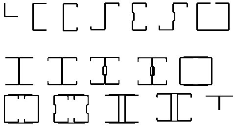
В редких случаях могут быть использованы профили открытого и замкнутого сечений, представленные на рисунке 5.2.
Рисунок 5.2 -Открытые и замкнутые сечения элементов конструкций из стальных тонкостенных, холодногнутых профилей
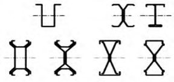
Для ограждающих конструкций и настилов используются профили, представленные на рисунке 5.3.
Рисунок 5.3 -Формы сечений профилированных листов и кассетных профилей
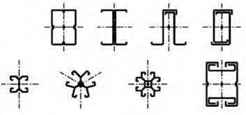
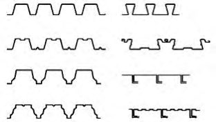
а) отгибы и сгибы; б) изогнутый или скругленный промежуточный элемент жесткости; в) уголок жесткости, присоединенный болтом; г) одиночные краевые отгибы; д) двойные краевые отгибы профилированных листов
Рисунок 5.4 -Типичные формы элементов жесткости холодногнутых профилей
6Материалы для конструкций и соединений
Значение γ𝑚 = 1,025 - для проката с пределом текучести до 350 Н/мм² и γ𝑚 = 1,05 - для проката с пределом текучести 350 Н/мм² и выше.
Таблица 6.1
| Напряженное состояние | Расчетное сопротивление проката |
|---|---|
| Растяжение, сжатие, изгиб Сдвиг Смятие при плотном касании | 𝑅 𝑦 = 𝑅 𝑦𝑛 γ 𝑚 ⁄ 𝑅 𝑠 = 0,58𝑅 𝑦𝑛 γ 𝑚 ⁄ 𝑅 𝑙𝑝 = 0,5𝑅 𝑢𝑛 γ 𝑚 ⁄ |
Нормативные и расчетные сопротивления при растяжении, сжатии и изгибе холоднокатаного листового проката приведены в таблице 6.2.
Таблица 6.2
| Марка стали | Нормативный документ | Нормативное сопротивление, Н/мм² | Нормативное сопротивление, Н/мм² | Расчетное сопротивление, Н/мм² | Расчетное сопротивление, Н/мм² | Расчетное сопротивление, Н/мм² |
|---|---|---|---|---|---|---|
| 𝑅 𝑦𝑛 | 𝑅 𝑢𝑛 | 𝑅 𝑦 | 𝑅 𝑠 | 𝑅 𝑙𝑝 | ||
| 220 | ГОСТ Р 52246 | 220 | 300 | 215 | 125 | 105 |
| 250 | ГОСТ Р 52246 | 250 | 330 | 245 | 140 | 120 |
| 280 | ГОСТ Р 52246 | 280 | 360 | 270 | 155 | 135 |
| 320 | ГОСТ Р 52246 | 320 | 390 | 310 | 180 | 155 |
| 350 | ГОСТ Р 52246 | 350 | 420 | 330 | 190 | 165 |
| ХП, ПК | ГОСТ 14918 | 230 | 300 | 225 | 130 | 110 |
СП 260.1325800.2016
Допускается применение стального тонколистового проката с алюмоцинковыми покрытиями по [1] классов не менее AZ150, AZ255.
Другие типы метизов, такие как пристреливаемые дюбели и комбинированные заклепки, могут быть использованы в соответствии с действующими техническими условиями и стандартами организаций на изделия. Технические условия на вытяжные заклепки определены в ГОСТ 10299 - ГОСТ 10301. Особенности расчета соединений приведены в разделе 8.
Примечание - За расчетную температуру принимают среднюю температуру самых холодных суток для данной местности, устанавливаемую с обеспеченностью 0,98 по таблице температур наружного воздуха.
Примечание - Сварные соединения следует выполнять в заводских условиях с последующей защитой зоны шва от воздействия коррозии.
7Расчет конструктивных систем зданий и сооружений на прочность и устойчивость
7.1Общие положения
Таблица 7.1 -Максимальные значения отношений ширины и высоты элементов сечения к толщине
| Элементы поперечного сечения | Максимальное значение |
|---|---|
| 𝑏/𝑡 ≤ 60 | |
| 𝑏/𝑡 ≤ 100 𝑐/𝑡 ≤ 40 |
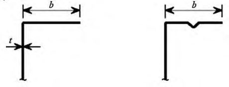
0,2 ≤
0,1 ≤
где размеры b , c и d - в соответствии с таблицей 7.1. Если с / b < 0,2 или d / b < 0,1, то отгиб не учитывается ( с = 0 или d = 0).
Примечания
1 Если геометрические характеристики эффективного поперечного сечения определены испытаниями или расчетами, то эти ограничения не учитывают.
2 Размер отгиба c измеряют перпендикулярно полке, даже если он расположен под другим углом по отношению к ней.
Рисунок 7.1 -Пример обозначения размеров S -образного сечения
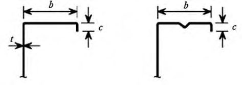
В расчетах следует принимать следующие обозначения осей в сечении элементов профиля, как это показано на рисунке 7.2. Для профилированных листов и кассетных профилей используют следующие обозначения осей: х -х -ось параллельна плоскости листа; у -у -ось перпендикулярна плоскости листа.
Рисунок 7.2 -Обозначения осей
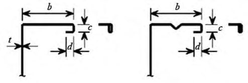
t g -минусовой допуск на толщину листовой заготовки, %; t m.p толщина металлического покрытия.
Примечание - Для цинкового покрытия класса 275 tm.p -0,04 мм.
0,5 мм t cor 4 мм - для изготовления профилей и профилированных листов;
0,5 мм t cor 4 мм - для накладок и стыков.
Может быть использован материал большей или меньшей толщины при условии, что несущая способность элемента определена по расчету, основанному на испытаниях.
7.2Расчет конструкций из тонкостенных профилей
где 𝐹 -максимальный расчетный силовой фактор в элементе от невыгодных сочетаний нагрузок и воздействий;
𝐺𝑒𝑓 -редуцированный геометрический параметр поперечного сечения стержня, для этого сочетания нагрузок и воздействий;
𝑅𝑛 - нормативное сопротивление стали, временное сопротивление или предел текучести; γ𝑚 - коэффициент надежности по материалу; γ𝑐 - коэффициент условий работы.
Примечание - При вычислении силового фактора F должен быть учтен γ𝑛 -коэффициент надежности по ответственности зданий и сооружений.
Проверку по второму предельному состоянию следует выполнять от воздействия на конструкцию нормативных нагрузок с учетом редукции сечения по формуле
где f -прогиб (выгиб) или перемещение элемента конструкции; 𝑓 𝑢 -предельный прогиб (выгиб) или перемещение элемента конструкции по СП 20.13330.2011 (приложение Е).
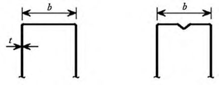
a) средняя точка угла или сгиба; б) теоретическая ширина bp в) теоретическая ширина bp плоской части стенки ( bp = наклонная высота sw ); г) теоретическая ширина bp д) теоретическая ширина bp для плоских частей полок; плоских частей, смежных с элементом жесткости на стенке; плоских участков, смежных с элементом жесткости на полке;
Х - точка пересечения срединных линий плоских участков; Р - точка пересечения биссектрисы угла φ со срединной линией поперечного сечения; 𝑔𝑟 - уменьшенный радиус изгиба пластинки, вычисляемый по формуле где 𝑟 𝑚 = 𝑟 +
Рисунок 7.3 -Теоретическая ширина bp плоских участков поперечного сечения, примыкающих к углу
где 𝐴𝑔 -полная площадь поперечного сечения;
𝐴𝑔,𝑠h -значение 𝐴𝑔 для сечения с острыми углами; 𝑏𝑝,𝑖 -теоретическая ширина плоского i -го элемента в сечении с острыми углами;
𝐼 𝑔 -момент инерции полного поперечного сечения;
𝐼 𝑔,𝑠h -значение 𝐼 𝑔 для сечения с острыми углами;
𝐼𝑤 -секториальный момент инерции поперечного сечения;
𝐼 𝑤,𝑠h -значение I w для сечения с острыми углами; φ j -угол между двумя плоскими элементами; m -количество плоских элементов; n -количество криволинейных элементов; 𝑟 𝑗 -внутренний радиус криволинейного j -го элемента.
Рисунок 7.4 -Приближенные допущения для углов сгиба
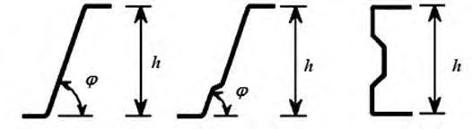
7.3Расчет тонкостенных профилей с учетом закритической работы сжатых пластин
7.3.1 Метод определения редуцированных геометрических характеристик поперечных сечений элементов
- 7.3.1.1 При определении несущей способности и жесткости холодногнутых элементов и профилированных листов следует учитывать влияние потери местной устойчивости и устойчивости формы сжатой части поперечного сечения.
Редуцированную площадь поперечного сечения тонкостенного конструктивного элемента (пластинки) Ared после потери местной устойчивости определяют по формуле
- 7.3.1.2 Допускается не учитывать влияние кривизны более широкой сжатой полки профиля на несущую способность относительно проектной оси полки профиля при изгибе или полки изгибаемого арочного профиля, в котором наружная сторона сжата, если ее кривизна составляет менее 5 % высоты сечения профиля, ее влияние см. на рисунке 7.5. Если кривизна больше, то следует учитывать снижение несущей способности, например, путем уменьшения свеса широких полок и путем учета возможного изгиба стенок.
- 7.3.1.3 Пример искривления сжатой и растянутой полки профиля с элементами жесткости и без них, прямолинейных до приложения нагрузки, показан на рисунке 7.5.
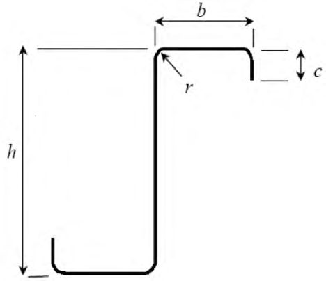
Рисунок 7.5 -Пример кривизны полки профиля, прямолинейного до приложения нагрузки
7.3.1.4 Кривизну сжатой полки (деформацию изгиба полки внутрь к нейтральной оси) u вычисляют по приведенным ниже формулам. Расчет применим для сжатых и растянутых полок с продольными элементами жесткости и без них, но не применим для полок с близко расположенными поперечными гофрами.
где bs -половина расстояния между стенками коробчатого и шляпного сечений или свес полки; t -толщина полки; z -расстояние от рассматриваемой полки до нейтральной оси; r -радиус кривизны арочной балки;
а -главное напряжение в полках, рассчитанное по полной площади.
Если напряжение рассчитано для эффективного поперечного сечения, главное напряжение определяется умножением данного напряжения на отношение эффективной площади полки к полной площади полки.
- 7.3.1.5 При определении несущей способности и жесткости холодногнутых профилей следует учитывать влияние потери местной устойчивости и устойчивости формы сечения как это показано для случаев, приведённых на рисунке 7.6.
- 7.3.1.6 Влияние потери устойчивости формы сечения должно учитываться для случаев, показанных на рисунках 7.6 а) - 7.6 г). В этих случаях влияние потери устойчивости формы сечения оценивается линейным или нелинейным расчетом на устойчивость численными методами или испытаниями коротких стоек. Упрощенный способ линейного расчета приведен в 7.3.2 и 7.3.3.
Рисунок 7.6 -Примеры потери устойчивости формы сечения
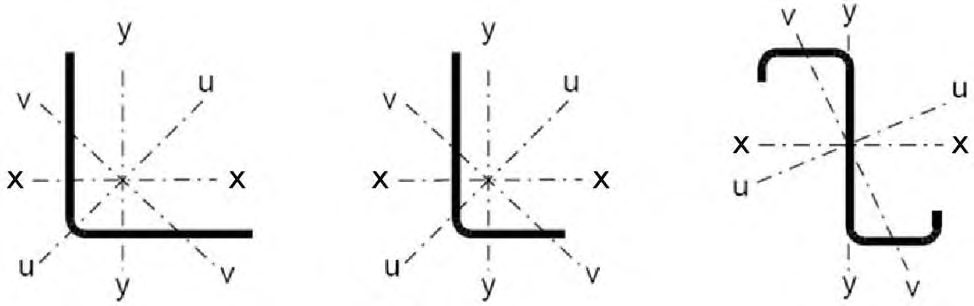
Для арочной балки:
7.3.1.7 При постоянной толщине редуцируемого элемента, редукция ведется за счет изменения ширины пластинки bef = ρ b , допускается также осуществлять редукцию изменением толщины t ef = ρ t .
Для гладких сжатых пластин, имеющих закрепления на продольных кромках (например, стенка двутаврового или полка и стенка С -образного сечения), коэффициент редукции определяется:
где (3 + ψ) ≥ 0 .
Для гладких пластин, имеющих закрепление на одной кромке, например, полка двутаврового, уголкового или швеллерного сечения (свес полки):
Для гладких сжатых пластин, имеющих закрепления по двум продольным кромкам (например, стенки и полки С-образного сечения) или закрепленных по одной стороне (например, полки швеллеров или уголков), коэффициент редукции определяют в зависимости от критического напряжения потери устойчивости пластинки σ cr :
где 𝑘σ - коэффициент, зависящий от граничных условий и характера напряжений в пластинке (приведен в таблицах 7.2 и 7.3); b - ширина пластинки; t - толщина пластинки; ν - коэффициент Пуассона (для стали ν = 0,3).
Для стальной пластинки формула для 𝑝 приводится к виду:
В качестве альтернативы методу согласно 7.3.1.7 допускается для определения эффективных площадей при уровне сжимающих напряжений ниже расчетного сопротивления применять следующие формулы: для гладкой промежуточной сжатой пластины с двухсторонним закреплением
для гладкой выступающей сжатой пластины с односторонним закреплением (свес листа)
σ𝑐𝑜𝑚 - реальные напряжения сжатия в редуцированном сечении пластинки от нагрузки. ψ - отношение меньшего напряжения к большему, сжатие считается положительным.
7.3.1.8 Для определения геометрических характеристик редуцированного сечения ( Ared , I red , Wred ) необходимо знать эффективную ширину bef , и коэффициент k σ, определяемые по формулам, приведенным в таблицах 7.2 и 7.3.
Таблица 7.2 -Пластины с двумя закрепленными кромками
| Распределение напряжений (сжатие положительно) | Эффективная ширина b ef |
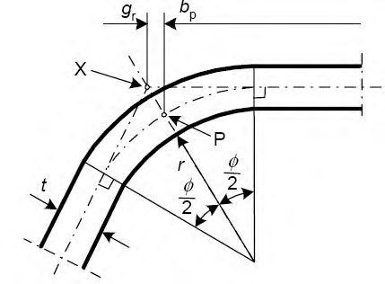
Таблица 7.3 -Пластины с одной закрепленной кромкой
| Распределение напряжений (сжатие положительно) | Эффективная ширина b ef |
|---|---|
| 1 > ψ > 0 𝑏 𝑒𝑓 = ρ𝑐 | |
| ψ < 0 𝑏 𝑒𝑓 = ρ𝑏 𝑐 = ρ𝑐 (1-ψ) ⁄ |
СП 260.1325800.2016
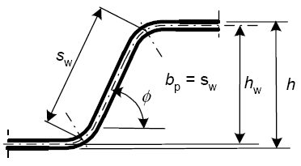
7.3.2 Пластины, усиленные продольными элементами жесткости
- 7.3.2.1 Для повышения жесткости и несущей способности пластины, составляющие поперечное сечение профилей, усиливают промежуточными и краевыми элементами жесткости (см. рисунок 7.7).
- 7.3.2.2 Жесткость упругоподатливых связей, накладываемых на пластинку элементами жесткости, должна учитываться приложением погонной единичной нагрузки u , как показано на рисунке 7.7. Жесткость связей K на единицу длины вычисляют по формуле
СП 260.1325800.2016
где - перемещение элемента жесткости от единичной нагрузки u , действующей в центре тяжести b 1 эффективной части поперечного сечения элемента жесткости на единицу длины профиля.
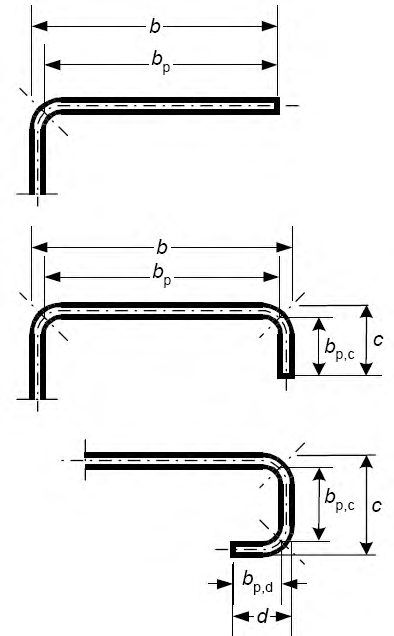
а) фактическая схема
Рисунок 7.7 -Схемы к определению жесткости связей
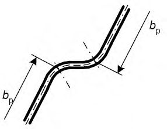
Для краевого элемента жесткости перемещение определяет по формуле
7.3.2.3 Поперечное сечение краевого отгиба состоит из вертикального элемента жесткости с или вертикального и горизонтального элементов с и d , как показано на рисунке 7.8, плюс примыкающая эффективная часть плоского участка bp подкрепляемой пластинки.
Рисунок 7.8 -Краевые отгибы
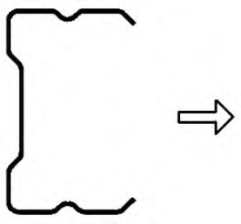
7.3.2.4 Расчет краевых отгибов полок С- и Z-образных и подобных им сечений профилей, состоящих из стенки и верхней и нижней полок, должен начинаться с определения эффективной ширины сжатых полок с элементами жесткости в виде отгибов или двойных отгибов, параметры « с » или « с » и « d » для двойного отгиба определяют по 7.3.1.
Начальное эффективное сечение сжатой полки, определяется в предположении, что жесткость, накладываемая краевым отгибом на полку, 𝐾 = ∞ и напряжение равно 𝑅𝑦 .
- 7.3.2.5 Начальные значения эффективной ширины bе 1 и bе 2, приведенные на рисунках 7.7, 7.8, определяют по 7.3.1.7 с допущением, что плоский элемент ( bp ) оперт по двум сторонам.
- 7.3.2.6 Начальные значения эффективной ширины сef и def , приведенные на рисунке 7.8, следует определять следующим образом:
- а) для одинарного краевого отгиба:
где определяют с учетом коэффициента потери устойчивости k :
- б) для двойного краевого отгиба:
где определяют по 7.3.1.7 с учетом коэффициента потери устойчивости k как для пластинки опертой по двум сторонам;
где определяют по 7.3.1.6 с учетом коэффициента k как для пластинки опертой по одной стороне.
Эффективную площадь поперечного сечения Аs краевого отгиба определяют по формулам:
Примечание - При необходимости учитывают закругления.
7.3.2.7 Коэффициент снижения несущей способности d вследствие потери устойчивости формы сечения (плоская форма потери устойчивости краевого элемента жесткости) определяют в зависимости от значения cr , s . Критическое напряжение потери устойчивости краевого отгиба в упругой стадии сr , s определяют по формуле
где К 1 - жесткость связи, накладываемая отгибом на единицу длины полки;
I s -момент инерции эффективного сечения отгиба, определенный по эффективной площади Аs относительно центральной оси а -а эффективного поперечного сечения (см. рисунок 7.8).
- 7.3.2.8 Для краевых элементов жесткости выражение жесткости связи К 1 для сжатой полки вычисляют по формуле
где b 1 - расстояние от пересечения стенки и полки до центра тяжести эффективной площади краевого отгиба (включая эффективную часть bе 2 полки) на сжатой полке (см. рисунок 7.7); или b 2 - расстояние от пересечения стенки и полки до центра тяжести эффективной площади краевого отгиба (включая эффективную часть полки) на сжатой полке 1; hw - высота стенки; kf = 0 - если нижняя полка растянута (т.е. для балки, изгибаемой относительно оси х -х ), kf = 1 -для сжатого симметричного сечения.
Для промежуточного элемента жесткости перемещение δ определяют по формуле
7.3.2.9 Коэффициент снижения несущей способности ребра d вследствие плоской формы потери устойчивости элемента жесткости следует определять с учетом относительной гибкости λ𝑑 следующим образом:
cr , s -критическое напряжение в упругой стадии для элементов жесткости, определяемое по формуле (7.28).
Как вариант, критическое напряжение элемента жесткости может быть определено на основании расчета устойчивости первого порядка в упругой стадии с использованием численных расчетов.
7.3.2.10 Уменьшенную эффективную площадь элемента жесткости Аs , red , с учетом плоской формы потери устойчивости, определяют по формуле
где com -сжимающее напряжение вдоль центральной оси элемента жесткости от нагрузки, действующей на конструкцию, рассчитанное для эффективного поперечного сечения.
7.3.2.11 При определении геометрических характеристик эффективного поперечного сечения уменьшенная эффективная площадь Аs , red должна быть определена с учетом уменьшенной толщины t red = tAs , red / As для всех элементов, включенных в As .
7.3.2.12 Последовательность проведения расчета полок тонкостенных профилей с элементами жесткости в виде отгибов приведена в приложении Б.
7.3.3 Сжатые пластинки с промежуточными элементами жесткости
7.3.3.1 Промежуточные элементы жесткости устанавливают в середине пластинок, закрепленных по двум продольным сторонам. В поперечное сечение промежуточного элемента жесткости включают сам элемент жёсткости и примыкающие к нему участки эффективных частей пластинки bp ,1 и bp ,2, показанных на рисунке 7.9.
Рисунок 7.9 -Промежуточные элементы жесткости
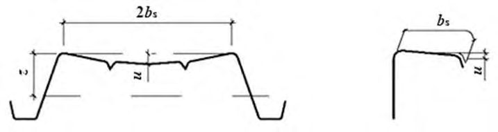
7.3.3.2 При расчете промежуточного ребра жесткости определяют начальное эффективное сечение элемента жесткости с использованием эффективной ширины пластинок, примыкающих к ребру, определяемой с учетом того, что элемент жесткости обеспечивает полное защемление 𝐾 = ∞ и напряжение в ребре равно Ryn / m .
7.3.3.3 Начальные значения эффективной ширины b 1, е 2 и b 2, е 1 , показанные на рисунке 7.9, следует определять с допущением, что плоские элементы bp ,1 и bp ,2 оперты по двум сторонам (см. таблицу 7.2).
7.3.3.4 Эффективную площадь поперечного сечения A s промежуточного элемента жесткости определяют по формуле
где bs -ширина элемента жесткости, показанная на рисунке 7.8.
Примечание - При необходимости учитывают закругления углов.
7.3.3.5 Критическое напряжение потери устойчивости промежуточного элемента жесткости cr , s определяется по формуле
где К -жесткость связи на единицу длины;
I s -момент инерции эффективного сечения элемента жесткости, определенного по эффективной площади Аs относительно центральной оси а -а эффективного поперечного сечения (см. рисунок 7.9).
Для промежуточного элемента жесткости значения коэффициента К вычисляют по формуле
- 7.3.3.6 Коэффициент снижения несущей способности d вследствие потери устойчивости формы сечения (плоская форма потери устойчивости промежуточного элемента жесткости) определяют в зависимости от значения cr , s (см. 7.3.2.7).
- 7.3.3.7 Уменьшенную эффективную площадь элемента жесткости Аs , red , вызванную потерей устойчивости формы сечения (изгибная форма потери устойчивости элемента жесткости), определяют по формуле
7.3.3.8 При определении геометрических характеристик эффективного поперечного сечения промежуточного элемента жесткости уменьшенную эффективную площадь 𝐴𝑠,𝑟𝑒𝑑 следует определять с учетом уменьшенной толщины 𝑡 𝑟𝑒𝑑 = 𝑡𝐴𝑠,𝑟𝑒𝑑/𝐴𝑠 для всех элементов, включенных в 𝐴𝑠 .
7.3.3.9 После проведения первого приближения в расчете площади промежуточного ребра жесткости проводят второе приближение.
7.3.3.10 Последовательность проведения расчета тонкостенных профилей с промежуточными элементами жесткости приведена в приложении Б.
7.4Трапециевидные гофрированные листы с промежуточными элементами жесткости
7.4.1 Общие положения
Требования настоящего подраздела распространяются на трапециевидные гофрированные листы с полками и стенками, имеющими промежуточные элементы жесткости.
7.4.2 Полки с промежуточными элементами жесткости
7.4.2.1 При равномерном сжатии эффективное поперечное сечение полки с промежуточными элементами жесткости должно состоять из уменьшенной эффективной площади As , red , включающей сечение элемента жесткости, и двух примыкающих полос шириной 0,5 bef или 15 t , показанных на рисунке 7.10.
При одном центральном элементе жесткости полки критическое напряжение cr , s потери устойчивости в упругой стадии определяют по формуле
где bp -теоретическая ширина плоского элемента, показанная на (см. рисунок 7.9); bs -ширина элемента жесткости, измеренная по его периметру (см. рисунок 7.9);
A s и I s -площадь поперечного сечения и момент инерции сечения элемента жесткости (см. рисунок 7.8).
Формула (7.39) может быть использована для элементов жесткости в виде широких гофров (канавок), плоская часть которых уменьшена из условия потери местной устойчивости, а для bp в формуле (7.39) берется большее из значений: b p или 0,25(3 bp + br ) (см. рисунок 7.11). Подобный метод применим для полок с двумя или несколькими широкими гофрами.
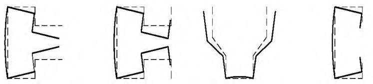
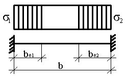
- а) поперечное сечение для расчета As
- б) поперечное сечение для расчета Is
Рисунок 7.10 -Включение в ребро жесткости примыкающих участков полки
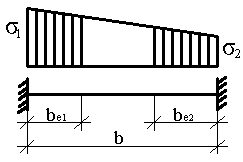
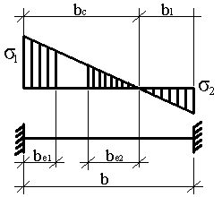
Рисунок 7.11 -Сжатая полка с одним, двумя или несколькими элементами жесткости
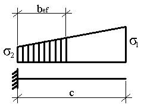
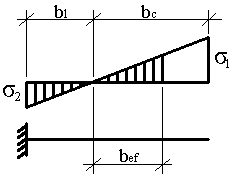
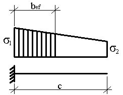
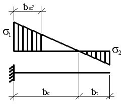
7.4.2.2 При двух симметрично расположенных элементах жесткости полки критическое напряжение cr , s потери устойчивости в пределах упругости вычисляют по формуле
где be = 2 bp ,1 + bp ,2 + 2 bs ; b 1 = bp ,1 + 0,5 br , здесь bp ,1 -теоретическая ширина крайнего плоского элемента (см. рисунок 7.11); b p ,2 -теоретическая ширина среднего плоского элемента (см. рисунок 7.11); b r -общая ширина элемента жесткости (см. рисунок 7.11);
A s и I s -площадь поперечного сечения и момент инерции поперечного сечения элемента жесткости (см. рисунок 7.11).
7.4.2.3 Для нескольких элементов жесткости на полке (трех или более одинаковых) эффективную площадь всей полки Aef вычисляют по формуле
где -понижающий коэффициент, соответствующий гибкости 𝑝 , основанной на напряжении потери устойчивости в упругой стадии:
где I s -суммарный момент инерции элементов жесткости относительно центральной оси а -а без учета слагаемого bt 3 /12; b 0 -ширина полки в проекции (см. рисунок 7.11); be -развернутая ширина полки (см. рисунок 7.11).
7.5Стенки гофров с элементами жесткости в количестве не более двух
- а) полосу шириной sef ,1, примыкающую к сжатой полке; б) уменьшенную эффективную площадь As,red каждого из элементов жесткости на стенке, при их количестве не более двух;
- в) примыкающую к центральной оси эффективного сечения полосу шириной sef , n ; г) растянутую часть стенки.
- для одного элемента жесткости или для элемента жесткости, ближайшего к сжатой полке:
A
- для второго элемента жесткости:
A
где размеры sef ,1 , ..., sef , n , ssa и ssb показаны на рисунке 7.12.
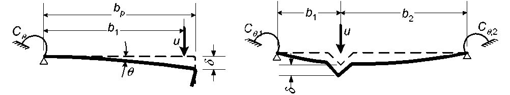
где σ𝑐𝑜𝑚 -напряжение в сжатой полке при достижении сечением предела несущей способности.
где ес -расстояние от эффективной центральной оси до нейтральной линии сжатой полки (см. рисунок 7.12); ha , hb , hsa и hsb -размеры, показанные на рисунке 7.12.
- для стенки без элементов жесткости, если sef ,1 + sef , n sn и вся стенка устойчива, то в эффективную площадь стенки включают:
- для стенки, усиленной элементом жесткости, если sef ,1 + sef ,2 sa и часть стенки sa устойчива, то в эффективную площадь стенки включают:
- для стенки с одним элементом жесткости, если sef ,3 + sef , n sn и часть стенки sn устойчива, то в эффективную площадь стенки включают:
- для стенки с двумя элементами жесткости: если sef ,3 + sef ,4 sb и часть стенки sb устойчива, то в эффективную площадь стенки включают:
если sef ,5 + sef , n sn и часть стенки sn устойчива, то в эффективную площадь стенки включают:
где 𝑠1 и 𝑠2 вычисляют по формулам:
- для одиночного элемента жесткости
- для элемента жесткости, ближайшего к сжатой полке, в стенке с двумя элементами жесткости
здесь sc -размер, показанный на рисунке 7.12;
I s -момент инерции поперечного сечения элемента жесткости, включающего ширину выступа по образующей ssa и два примыкающих участка стенки шириной sef ,1 каждый, относительно собственной центральной оси, параллельной плоскости элементов стенки (см. рисунок 7.12).
При определении I s возможное различие уклонов плоских элементов стенки по обе стороны от элемента жесткости допускается не учитывать.
7.6Гофрированные листы с элементами жесткости на полках и стенках
Для гофрированных листов с промежуточными элементами жесткости на полках и стенках (см. рисунки 7.13 и 7.14) взаимодействие между потерей устойчивости формы сечения (плоская форма потери устойчивости элементов жесткости пояса и стенки) следует учитывать с использованием уточненного значения критического напряжения cr , mod для обоих типов элементов жесткости в упругой стадии работы, определенное по формуле
где cr , s -критическое напряжение в упругой стадии для промежуточного элемента жесткости полки, см. 7.4.2.2 для полки с одним элементом или 7.4.2.3 -для полки с двумя элементами жесткости;
cr , sa -критическое напряжение в упругой стадии для одиночного элемента жесткости стенки или элемента жесткости, ближайшего к сжатой полке, в стенке с двумя элементами жесткости (см. 7.5.6);
As -эффективная площадь сечения промежуточного элемента жесткости полки;
Asa -эффективная площадь сечения промежуточного элемента жесткости стенки;
s = 1 - ( ha + 0,5 hha )/ ec -для изгибаемого профиля;
s = 1 -для центрально сжатого профиля.
Рисунок 7.13 -Элементы жесткости стенок для трапециевидных гофрированных листов
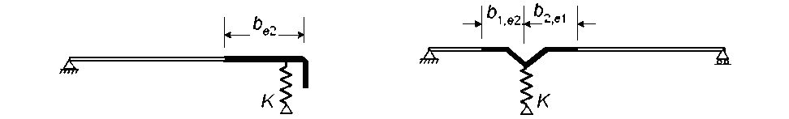
Рисунок 7.14 -Трапециевидный гофрированный лист с элементами жесткости на полках и стенках
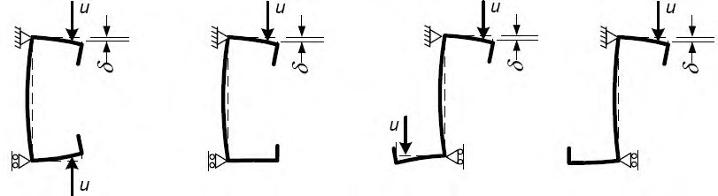
7.7Предельные состояния первой группы
7.7.1 Общие положения
При определении несущей способности поперечного сечения вместо расчета на прочность по предельным состояниям при проектировании могут быть использованы результаты экспериментальных исследований.
Примечание - Проектирование, основанное на результатах экспериментальных исследований, предпочтительно для оценки несущей способности сечений с относительно высоким отношением bp/t при искривлениях стенки или при учете влияния сдвига.
При выполнении расчетов влияние местной потери устойчивости элементов должно учитываться путем использования геометрических характеристик эффективного сечения, определяемого согласно 7.3 -7.6.
7.7.2 Элементы центрально растянутые и сжатые
7.7.2.1 Расчетную несущую способность поперечного сечения по прочности при осевом растяжении N вычисляют по формуле
- 7.7.2.2 Если эффективная площадь нетто Aef,n профиля менее, чем полная площадь поперечного сечения нетто 𝐴𝑔𝑛 , прочность при центральном сжатии стержней вычисляют по формуле
- 7.7.2.3 Если центр тяжести эффективного поперечного сечения не совпадает с центром тяжести полного сечения, то следует учитывать момент от смещения eN,(x,y) центральных осей х -х и у -у относительно положения оси действия силы (см. рисунок 7.15).
Дополнительные моменты Му , и Mz , от смещения центральных осей определяют по формулам
где eNx и eNy - смещение центральных осей у -у и z -z относительно осевых усилий.
Допускается не учитывать эксцентриситет в следующих случаях:
- если эксцентриситет менее 1,5 % размера сечения в направлении эксцентриситета;
- если учет эксцентриситета приводит к более благоприятному результату при определении напряжений.
- 7.7.2.4 Расчет на прочность сечений в местах крепления растянутых элементов из одиночных уголков, прикрепляемых одной полкой болтами или другими нагельными креплениями и одиночного растянутого уголка с пределом текучести до 380 Н/мм² следует рассчитывать по формуле
Рисунок 7.15 -Эффективное поперечное сечение при сжатии
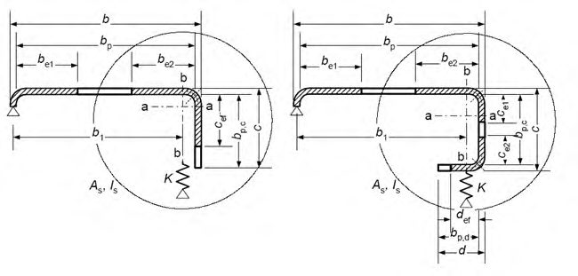
СП 260.1325800.2016 где γ𝑐1
= ( α1𝐴𝑛1
𝐴𝑒𝑓,𝑛
+α2)β; здесь 𝐴𝑒𝑓,𝑛 - эффективная площадь уголка нетто;
𝐴𝑛1 -часть сечения прикрепляемой полки уголка между краем отверстия и пером; α1, α 2, β - принимаются по СП 16.13330.2011 (таблица 6).
7.7.2.5 Ветви составных стержней на расчетной длине, равной расстоянию между планками, должны быть проверены на крутильную и изгибно-крутильную формы потери устойчивости.
7.7.2.6 Расчет составных сечений из уголков швеллеров, С- и Σ-образных профилей, соединенных вплотную или через прокладки, следует выполнять как сплошностенчатых при условии, что участки между соединяющими сварными швами или центрами крайних болтов не превышают для сжатых элементов 30 i ef - для сжатых элементов и 70 i ef - для растянутых, при условии проверки ветвей на изгибно-крутильную форму потери устойчивости с учетом расцентровки, на расчетной длине ветви, равной расстоянию между планками или узлами решетки.
7.7.2.7 Расчет распорок, уменьшающих расчетную длину сжатых элементов, следует выполнять на усилие, равное условной поперечной силе Qu в основном сжатом элементе по формуле
где 𝑁 - полное продольное усилие в сквозном стержне; φ - коэффициент устойчивости при центральном сжатии составного стержня.
7.7.3 Расчет элементов при изгибе
7.7.3.1 Расчетная несущая способность поперечного сечения по изгибающему моменту относительно одной из главных осей Мх определяют следующим образом:
- если момент сопротивления эффективного сечения Wх,ef менее, чем момент сопротивления полного упругого сечения Wх ,
- если момент сопротивления эффективного сечения Wef равен моменту сопротивления полного упругого сечения Wx, min ,
При изгибе в двух главных плоскостях:
Формулы (7.75) и (7.76) применимы при соблюдении следующих условий:
- а) изгибающий момент действует только относительно одной из главных осей поперечного сечения;
- б) конструктивный элемент не подвержен кручению или крутильной, изгибно-крутильной формам потери устойчивости, или плоской формы потери устойчивости изгиба, или потери устойчивости формы сечения;
- в) угол между стенкой и полкой профиля более 60°.
- 7.7.3.2 Эффективный момент сопротивления Wef должен определяться на основе эффективного поперечного сечения, испытывающего изгиб только относительно той главной оси, относительно которой происходит изгиб стержня.
Примечание - Допускается отношение = 2/ 1 при расчете Wef , используемое для определения эффективных участков стенки, вычислять с использованием сечения, состоящего из эффективной площади сжатой полки и полной площади стенки (см. рисунок 7.16).
Рисунок 7.16 -Эффективное поперечное сечение для определения предельного изгибающего момента
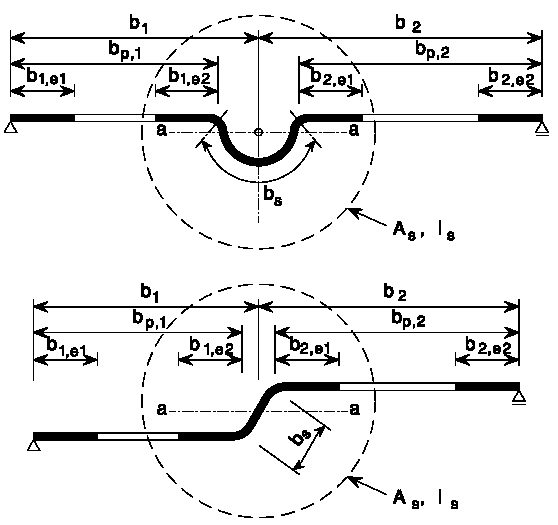
7.7.4 Совместное действие изгиба продольной силы
При совместном действии изгибающих моментов и продольной сжимающей силы и отсутствии поперечной силы, должно выполняться следующее условие:
где Aef - эффективная площадь поперечного сечения при действии равномерного сжатия;
Wef,x,(y) - минимальный момент сопротивления (соответствующий волокнам с максимальными упругими напряжениями) эффективного поперечного сечения относительно соответствующей оси; eN,x(y) - смещение центральных осей х-х и у-у относительно положения оси действия силы, см. 7.7.2.3.
Примечание - Обозначения NEd , My,Ed , Mz,Ed и ∆ Mi = NEde N,i зависят от сочетания соответствующих нормальных напряжений.
7.7.5 Совместное действие продольной, поперечной силы и изгибающих моментов
Для поперечных сечений при совместном действии осевой силы N , изгибающего момента M и поперечной силы Q влияние последней не учитывается, если Q 0,5 Qw . При значении поперечной силы более половины предельного значения несущей способности по 7.7.4 при совместном действии момента и поперечной силы расчетное значение несущей способности поперечного сечения следует определять по уменьшенному значению расчетного сопротивления:
7.7.6 Расчет на поперечную силу
7.7.6.1 Расчет балочных конструкций на поперечную силу ведется в зонах у крайних опор и зонах над промежуточными опорами (в неразрезных балочных системах, где поперечные силы оказывают существенное влияние на несущую способность стенок балок, особенно в зонах промежуточных опор, где максимальная поперечная сила сочетается со значительным изгибающим моментом и в отдельных случаях с продольной силой).
Несущую способность поперечного сечения от действия поперечной силы Qw вычисляют по формуле
где Rs -расчетное напряжение при сдвиге, учитывающее потерю устойчивости стенки, приведенное в таблице 7.4; hw -высота стенки между срединными плоскостями полок; α -угол наклона стенки относительно полок.
Таблица 7.4 -Расчетные напряжения Rs при сдвиге
| Условная гибкость стенки | Стенка без элемента жесткости на опоре | Стенка с элементом жесткости на опоре* |
|---|---|---|
| 𝑤 ≤ 0,83 | 0,58 R y | 0,58 R y |
| 0,83 < 𝑤 < 1,40 | 0,48𝑅 𝑦 λ ̅ 𝑤 ⁄ | 0,48𝑅 𝑦 λ ̅ 𝑤 ⁄ |
| 𝑤 ≥ 1,40 | 0,67𝑅 𝑦 λ ̅ 𝑤 2 ⁄ | 0,48𝑅 𝑦 λ ̅ 𝑤 ⁄ |
7.7.6.2 Условную гибкость стенки λ w вычисляют по формулам:
- для стенок без продольных элементов жесткости
- для стенок с продольными элементами жесткости
I s -момент инерции сечения отдельного продольного элемента жесткости, определенного, относительно оси а -а , проходящей через центр тяжести сечения ребра, параллельно плоскости стенки; sd -общая наклонная высота стенки (при наличии наклона), включая периметр продольного ребра жесткости по осевой линии; sw -наклонная высота стенки.
7.7.7 Кручение
Касательные напряжения от поперечных сил, свободного кручения, нормальные и касательные напряжения от стесненного кручения определяют с использованием геометрических характеристик полного сечения. В поперечных сечениях, подверженных кручению, должны быть выполнены следующие условия:
где t , r -расчетное суммарное нормальное напряжение, рассчитанное для соответствующего рассматриваемого эффективного поперечного сечения; τ𝑡,𝑟 -расчетное суммарное касательное напряжение, рассчитанное для полного поперечного сечения.
Суммарное нормальное напряжение tot , r и суммарное касательное напряжение tot , r вычисляют по формулам:
где Му , r -нормальное напряжение от изгибающего момента Mу , Ed (определяется для эффективного поперечного сечения);
Мх,r -нормальное напряжение от изгибающего момента Mz , Ed (определяется для эффективного поперечного сечения);
N , r -нормальное напряжение от осевой силы NЕd (определяется для эффективного поперечного сечения);
w , r -нормальные напряжения от депланации (определяется для полного поперечного сечения);
Qy , r -cдвигающее напряжение от поперечной силы Vy , Ed (определяется для полного поперечного сечения);
Qх , r -сдвигающее напряжение от поперечной силы Vz , Ed (определяется для полного поперечного сечения);
t , r -касательное напряжение от свободного кручения (определяется для полного поперечного сечения);
w , r -касательное напряжение от депланации (определяется для полного поперечного сечения).
7.7.8 Расчет на устойчивость центрально сжатых стержней
7.7.8.1 Расчет на устойчивость центрально сжатых стержней сплошного сечения следует проводить по формуле
где φ -коэффициент устойчивости при центральном сжатии, принимаемый в зависимости от приведенной гибкости λ по СП 16.13330.2011 (пункт 7.1.3 или таблица Д.1 приложения Д, тип сечения в соответствии с данными таблицы 6.3):
где 𝑙 𝑒𝑓 - расчетная длина стержня; 𝑖 𝑒𝑓 - радиус инерции эффективного сечения, брутто.
Для элементов несимметричных сечений следует учитывать дополнительный момент ∆ M = NeN , вызванный эксцентриситетом центральной оси эффективного сечения (см. рисунок 7.15), а совместное действие осевой силы и момента следует принимать по 7.7.10.3.
- 7.7.8.2 Для элементов из открытых кососимметричных поперечных сечений (например, Z-образных с одинаковыми полками) кроме проверки устойчивости продольного изгиба стержень следует проверять на крутильную форму потери устойчивости:
- открытые сечения с одной осью симметрии (см. рисунок 7.17) следует проверять на изгибно-крутильную форму потери устойчивости;
- открытые сечения с несимметричной формой поперечного сечения следует проверять из условия потери устойчивости по крутильной форме или изгибно-крутильной формы потери устойчивости, которая может быть менее, чем несущая способность элемента из условия потери плоской формы устойчивости.
Расчетную несущую способность N из условия потери устойчивости по крутильной или изгибно-крутильной форме следует определять в соответствии с 7.7.8.1 и 7.7.8.4.
Рисунок 7.17 - Поперечные сечения, предрасположенные к изгибно-крутильной форме потери устойчивости
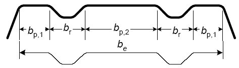
7.7.8.3 Критическую силу Ncr , Т для изгибно-крутильной формы потери устойчивости в упругой стадии свободно опертого стержня вычисляют по формуле
где G - модуль сдвига;
I t - момент инерции при свободном кручении полного сечения;
Iw - секториальный момент инерции полного сечения; i y - радиус инерции полного сечения относительно оси у-у ; i x - радиус инерции полного сечения относительно оси z-z ; l Т - расчетная длина элемента, теряющего устойчивость по крутильной форме; х 0 , у 0 - координаты центра сдвига относительно центра тяжести полного поперечного сечения.
Таблица 7.5 Кривые потери устойчивости для различных типов поперечных сечений
| Тип поперечного сечения | Потеря устойчивости относительно оси | Кривая потери устойчивости |
|---|---|---|
| х y | Любая | b |
| y z z z z | у - у z-z | a b |
| Любая | b | |
| Любая | с |
7.7.8.4 Для сечения с двумя осями симметрии (например, y 0 = x 0 = 0) критическую силу Ncr , TF для изгибно-крутильной формы потери устойчивости упругой стадии вычисляют по формуле
СП 260.1325800.2016
Условную гибкость 𝑇 при крутильной или изгибно-крутильной форме потери устойчивости вычисляют по формуле
где Ncr = Ncr , TF, если Ncr < Ncr , T ; здесь Ncr , TF - критическая сила потери устойчивости в упругой стадии по изгибно-крутильной форме;
Ncr , T - критическая сила потери устойчивости в упругой стадии по крутильной форме.
При крутильной или изгибно-крутильной форме потери устойчивости соответствующие предельные значения местных изгибов можно определить по СП 16.13330.2011 (таблица Д.1), соответствующие оси х, для λ = πλ𝑇 , для типов сечений по таблице 7.5.
7.7.8.5 Для поперечных сечений, симметричных относительно оси у -у (например, z 0 = 0), в упругой стадии критическую силу Ncr , TF для изгибнокрутильной формы потери устойчивости вычисляют по формуле
7.7.8.6 Расчетную длину l Т элемента, теряющего устойчивость по крутильной или изгибно-крутильной форме, следует определять с учетом степени его защемления от кручения и депланации на каждом конце элемента длиной LТ .
В зависимости от типа соединения на концах элемента могут приниматься следующие значения lT/LT :
1,0 - для соединений, обеспечивающих частичное закрепление от кручения и депланации (см. рисунок 7.18 а));
- 0,7 - для соединений, обеспечивающих значительное закрепление от кручения и депланации (см. рисунок 7.18б)).
- а) соединения, обеспечивающие частичное закрепление от кручения и депланации;
- б) соединения, обеспечивающие значительное закрепление от кручения и депланации (замкнутые сечения или сечения с болтами, проходящими через две стенки элемента)
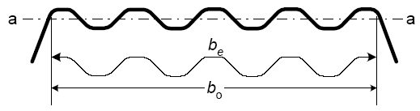
Рисунок 7.18 - Закрепление от кручения и депланации
- 7.7.8.7 Расчет составных сечений из уголков швеллеров, С-образных и Σ-образных профилей, соединенных вплотную или через прокладки, следует выполнять как сплошностенчатых при условии, что участки между соединяющими сварными швами или центрами крайних болтов не превышают для сжатых элементов 30 i ef - для сжатых элементов и 70 i ef - для растянутых, при условии проверки ветвей на изгибно-крутильную форму потери устойчивости с учетом дополнительных моментов ∆ M=NeN(x,y) , на расчетной длине ветви, равной расстоянию между планками или узлами решётки.
- 7.7.8.8 Условная гибкость между узлами ветвей, раскрепленных решетками, должна быть не более 2,3 и не должна превышать условную приведённую гибкость стержня в целом.
7.7.9 Общая устойчивость изгибаемых балок
- 7.7.9.1 Расчетное значение несущей способности по устойчивости плоской формы изгиба для балок, не раскрепленных из плоскости действия изгибающего момента, следует принимать равным
где χ LT - понижающий коэффициент при потере устойчивости плоской формы изгиба.
Примечание - При определении Wef отверстия на конце балки учитывать не следует.
- 7.7.9.2 Для изгибаемых элементов постоянного поперечного сечения значение χ𝐿𝑇 ≤ 1,0 при соответствующей условной гибкости LT вычисляют по формуле
здесь α𝐿𝑇 - коэффициент, учитывающий начальные несовершенства принимаемый равным 0,34 (таблица 7.6, кривая потери устойчивости b );
где Mcr - критический момент потери устойчивости плоской формы изгиба в упругой стадии, определение Mcr приведено в приложении Г; χ𝐿𝑇 -значение вычисляется по формулам (7.94, 7.95) или соответствует значению φ по СП 16.13330.2011 (таблица Д.1) для типа сечения b и λ = πλ𝑇 .
Таблица 7.6 Рекомендуемые значения коэффициентов, учитывающих начальные несовершенства, для кривых потери устойчивости плоской формы изгиба
| Кривая потери устойчивости | a | b | c |
|---|---|---|---|
| Коэффициент α LT | 0,21 | 0,34 | 0,49 |
7.7.9.3 При определении Mcr принимают геометрические характеристики поперечного сечения брутто и учитывают условия загружения, действительное распределение момента и раскрепления из плоскости действия изгибающего момента.
Для учета изменения изгибающего момента в балке между элементами бокового раскрепления, понижающий коэффициент LT можно скорректировать следующим образом:
где 𝑘𝑐 - поправочный коэффициент, принимаемый по таблице 7.7.
Таблица 7.7 Поправочные коэффициенты kc
| Эпюра моментов | k c |
|---|---|
| 1,0 | |
| 1 1,33 -0,33ψ | |
| 0,94 | |
| 0,90 | |
| 0,91 | |
| 0,86 | |
| 0,77 | |
| 0,82 |
7.7.10 Устойчивость при внецентренном сжатии элементов сплошного сечения
7.7.10.1 Расчет на устойчивость внецентренно сжатых стержней составного сечения, соединенными непосредственно стенками или через прокладки (рисунок 7.19) следует выполнять как расчёт стержня в целом, так и отдельных его ветвей.
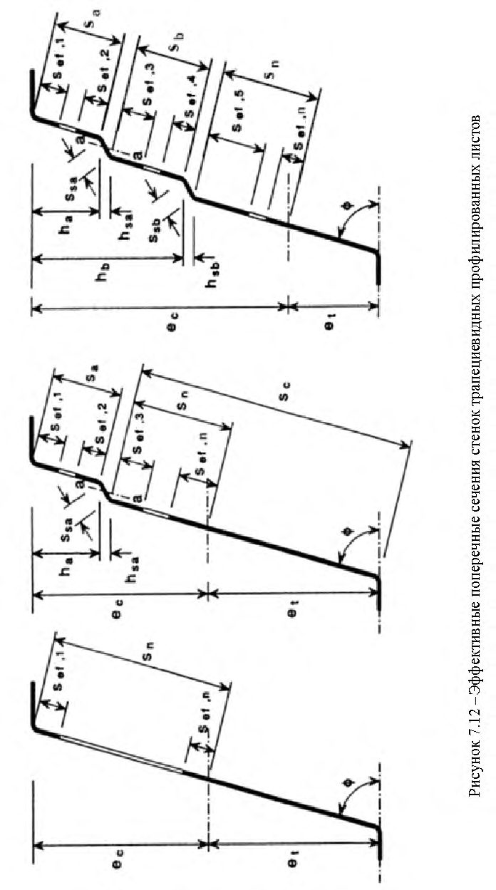
У
У
Рисунок 7.19 -Сечения сплошных стержней колонн и стоек
7.7.10.2 Статический расчет свободно опертых однопролетных элементов с шарнирными опирами концов с непрерывным или дискретным боковым раскреплением проводят с учетом начальных несовершенств, указанных в 5.3.2, проверку на устойчивость элементов постоянного сечения с двумя осями симметрии, не чувствительных к кручению, следует выполнять в соответствии со следующими положениями:
- элементы, не испытывающие деформации кручения, например замкнутые сечения или сечения, раскрепленные от кручения;
- элементы, испытывающие деформации кручения, например элементы открытого сечения и не раскрепленные от кручения.
Проверку несущей способности элементов конструктивных систем допускается выполняться как для отдельных однопролетных элементов, «вырезанных» из системы.
7.7.10.3 Для сжато-изгибаемых (внецентренно сжатых) элементов должны выполняться следующие условия:
где Np , Mx , p , и My , p -расчетные значения сжимающей силы и максимальных моментов относительно осей x -x и y -y соответственно;
Δ Mx , p , Δ Me , p -моменты от смещения центра тяжести относительно осей x -x и y -y ; φ x и φ y -понижающие коэффициенты при плоской форме потери устойчивости; χLT -понижающий коэффициент при проверке устойчивости плоской формы изгиба, см. 7.7.9. Для элементов, не чувствительных к деформациям кручения, χ LT = 1,0; kxx , kxy , kyx , kyy -коэффициенты взаимодействия (могут быть определены по приложению В).
- 7.7.10.4 При определении Mcr принимают геометрические характеристики поперечного сечения брутто и учитывают условия загружения, действительное распределение момента и раскрепления из плоскости действия изгибающего момента.
- 7.7.10.5 Допускается для проверки устойчивости сжато-изгибаемых элементов использовать упрощённую формулу
7.7.11 Расчет центрально сжатых и растянутых элементов сквозного сечения
- 7.7.11.1 Расчет на прочность элементов сквозного сечения на прочность при центральном растяжении и сжатии двух профилей составленных из швеллеров, С-образных и Σ-образных профилей, соединенных планками или решетками (см. рисунок 7.20), следует проводить по формулам (7.87) и (7.88), где A g и Aef - полная и эффективная площадь всех рабочих стержней, входящих в состав решетчатого элемента.
Рисунок 7.20 - Стержни сквозного сечения, объединенные планками и решеткой
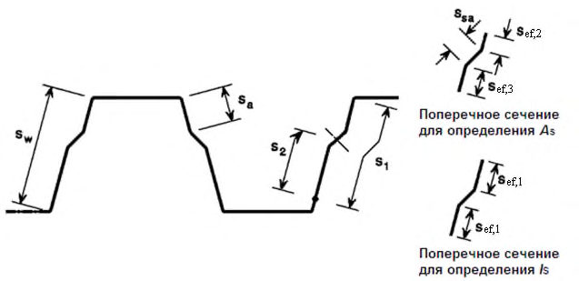
7.7.11.2 Расчет на устойчивость сжатых стержней сквозного сечения типа a , две ветви которых соединены планками или решетками, следует выполнять по формуле (7.86), при этом коэффициент φ относительно оси, перпендикулярной планкам и решеткам, следует определять по СП 16.13330.2011 (таблица Д.1 для сечений типа b из швеллеров, С-образных и Σобразных профилей) с заменой λ 𝑒𝑓 на значение λ𝑒𝑓,с , которое следует определять в зависимости от λ ef,c по 7.7.11.3.
7.7.11.3 Устойчивость отдельных ветвей должна быть проверена как на изгибную форму потери устойчивости так и на крутильную и изгибнокрутильную формы потери устойчивости по 7.7.8.4 - 7.7.8.6. Следует так же учитывать появление дополнительных моментов ∆ M=NeN , вызванных смещением центральных осей у -у и z -z относительно осевых усилий по 7.7.2.3, а так же расцентровкой решетки.
- 7.7.11.4 Приведенную гибкость λ 𝑒𝑓,𝑐 для сечений типа a с двумя ветвями (рисунок 7.20а) вычисляют по формулам:
- для креплений планками λ
Приведенную гибкость λ 𝑒𝑓,𝑐 для сечений типа b с четырьмя ветвями (рисунок 7.20б) вычисляют по формулам:
- для соединения планками
- для соединения решетками
λ𝑒𝑓,𝑐 - приведенная, эффективная гибкость сквозного стержня в целом в плоскости перпендикулярной оси у - у ; λ𝑏1,𝑒𝑓 -приведенная, эффективная гибкость ветви относительно собственной оси параллельной оси у - у ; λ𝑏2,𝑒𝑓 -приведенная, эффективная гибкость ветви относительно
собственной оси параллельной оси x - x ; h0 - расстояние между центрами тяжести стержней; 𝑙 𝑏 - шаг планок, высота панели решетки;
𝐼 𝑏1,𝑒𝑓 - эффективный момент инерции ветви относительно собственной оси параллельной оси у - у ;
𝐼 𝑏2𝑒𝑓 - эффективный момент инерции ветви относительно собственной оси параллельной оси x - x ;
𝐼 𝑠1 , 𝐼 𝑠2 - моменты инерции планок относительно осей 1-1 и 2-2 ;
𝐴𝑒𝑓 - эффективная площадь всего сквозного стержня;
𝐴𝑑1, 𝐴𝑑2 - площадь сечения раскосов решетки (при крестовой решетке двух раскосов), расположенных в плоскостях, перпендикулярных 1-1 и 2-2 .
7.7.11.5 В сквозных сечениях с планками условная гибкость отдельной ветви на участке между сварными швами или крайними болтами должна быть не менее 1,15. Ветви на расчетной длине между планками должны быть проверены на изгибно-крутильную форму потери устойчивости ветви в пределах расчетной длины между креплениями планок или решеток по формулам (7.91) и (7.102).
7.7.11.6 Условная гибкость между узлами ветвей, раскрепленных решетками, должна быть не более 2,3 и не должна превышать условную приведенную гибкость стержня в целом.
7.7.11.7 Расчет соединительных планок и элементов решеток сжатых стержней сквозного сечения следует выполнять на условную поперечную силу Qu , принимаемую постоянной по всей длине стержня по формуле
где 𝑁 - полное продольное усилие в сквозном стержне; φ -коэффициент устойчивости при центральном сжатии ((для сечений типа по таблице 7.5) и СП 16.13330.2011 (приложение Д.1)).
7.7.11.8 Условную поперечную силу Qu следует распределять поровну между решетками и планками, лежащими в плоскости, перпендикулярной оси, относительно которой проводится проверка устойчивости. Расчет соединительных планок и их прикреплений следует выполнять по СП 16.13330.2011 (пункты 7.2.8 и 7.2.9).
7.7.11.9 Расчет распорок, уменьшающих расчетную длину сжатых элементов, следует выполнять на усилие, равное условной поперечной силе в основном сжатом элементе по формуле (7.106).
7.7.12 Расчет потери устойчивости стенки от местной нагрузки
- 7.7.12.1 Расчет на смятие и потерю устойчивости стенки профиля, при действии опорной реакции или другой местной поперечной силы, приложенной к полке, следует проводить исходя из значения поперечной силы Qw,p , которая должна удовлетворять условию
где 𝑄 w , p -несущая способность стенки при местном поперечном воздействии.
- 7.7.12.2 Поперечное сечение с одной стенкой без элементов жесткости (см. рисунок 7.21) должно отвечать следующим критериям:
где hw -высота стенки между срединными плоскостями полок; r -внутренний радиус углов;
-угол наклона стенки относительно полок (в градусах).
Рисунок 7.21 -Примеры сечений профилей с одной стенкой
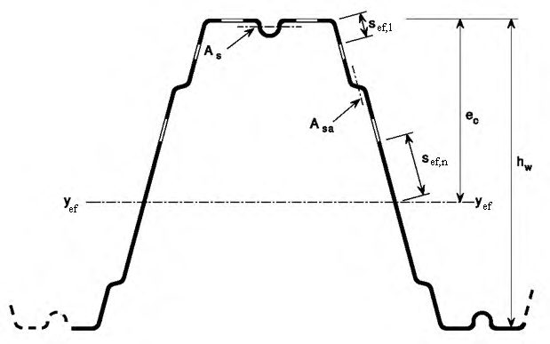
- 7.7.12.3 Несущую способность на одну стенку при местном поперечном воздействии 𝑄 w , p в виде опорной реакции или местной нагрузки вычисляют по формуле
где С коэффициент из таблиц 7.8-7.12; t - толщина стенки; φ -угол между плоскостью стенки и плоскостью опорной поверхности; r внутренний радиус изгиба;
Сr - коэффициент, учитывающий гибкость стенки из таблиц 7.87.12; b длина опорной части или местной распределенной нагрузки;
Cb коэффициент, учитывающий длину приложения локальной нагрузки на опоре или в пролете из таблиц 7.8-7.12; h высота плоской части стенки профиля;
Сh - коэффициент, учитывающий высоту стенки из таблиц 7.8-7.12.
Примечания
1 Для конструктивных элементов, состоящих из двух и более стенок, значение 𝑄𝑤,𝑝 рассчитывается для каждой стенки профиля и суммируется;
2 Концевое приложение опорной реакции или местной нагрузки от свободного края элемента должно быть менее или равно 1,5 hw ;
3 Приложение двух местных противоположно направленных нагрузок, приложенных к двум полкам элемента, должно быть менее или равно 1,5 hw ;
4 Приложение двух местных противоположно направленных нагрузок, приложенных к одной полке элемента, должно быть равно или более 1,5 hw .
Таблица 7.8 Составные стержни из двух швеллеров, С-образных и Σ- образных профилей, соединенных стенками
| Конструкция опоры и полок | Конструкция опоры и полок | Опорная реакция или локальная нагрузка | Опорная реакция или локальная нагрузка | С | C r | C b | C h | Ограни- чения |
|---|---|---|---|---|---|---|---|---|
| Закреплен- ная на опоре | Полка окаймлена | На одну полку | Концевая | 10 | 0,14 | 0,28 | 0,001 | 𝑟 𝑡 ≤ 5 ⁄ |
| Закреплен- ная на опоре | На одну полку | Проме- жуточная | 20 | 0,15 | 0,05 | 0,003 | 𝑟 𝑡 ≤ 5 ⁄ | |
| Не закреп- ленная на опоре | Полка окаймлена | На одну полку | Концевая | 10 | 0,14 | 0,28 | 0,001 | 𝑟 𝑡 ≤ 5 ⁄ |
| Не закреп- ленная на опоре | Полка окаймлена | На одну полку | Проме- жуточная | 20,5 | 0,17 | 0,11 | 0,001 | 𝑟 𝑡 ≤ 3 ⁄ |
| Не закреп- ленная на опоре | Полка окаймлена | На две полки | Концевая | 15,5 | 0,09 | 0,08 | 0,04 | 𝑟 𝑡 ≤ 3 ⁄ |
| Не закреп- ленная на опоре | Полка окаймлена | На две полки | Проме- жуточная | 36 | 0,14 | 0,08 | 0,04 | 𝑟 𝑡 ≤ 3 ⁄ |
| Не закреп- ленная на опоре | Неокайм- ленная полка | На одну полку | Концевая | 10 | 0,14 | 0,28 | 0,001 | 𝑟 𝑡 ≤ 5 ⁄ |
| Не закреп- ленная на опоре | Неокайм- ленная полка | На одну полку | Проме- жуточная | 20,5 | 0,17 | 0,11 | 0,001 | 𝑟 𝑡 ≤ 3 ⁄ |
Примечания
1 Значения коэффициентов действительны для отношений b / t ≤ 210; b / h ≤ 1,0.
2 Коэффициенты С приведены для составных двутавров, полученных от соединения стенок непосредственно друг к другу либо через сухари, последнее решение предпочтительно, так как позволяет контролировать появление щелевой коррозии и увеличивает момент инерции сечения из плоскости.
3 Расстояние между осями креплений сухарей изгибаемых элементов должны быть не более 40 i ef .
Таблица 7.9 -Стержни из одиночных швеллеров и С-образных профилей
| Конструкция опоры и полок | Конструкция опоры и полок | Опорная реакция или локальная нагрузка | Опорная реакция или локальная нагрузка | С | C r | C b | C h | Ограничения |
|---|---|---|---|---|---|---|---|---|
| Полка с | На одну полку | Концевая | 4 | 0,14 | 0,35 | 0,02 | 𝑟 𝑡 ≤ 9 ⁄ | |
| На одну полку | Проме- жуточная | 13 | 0,23 | 0,14 | 0,01 | 𝑟 𝑡 ≤ 5 ⁄ | ||
| отгибом | На две полки | Концевая | 7,5 | 0,08 | 0,12 | 0,048 | 𝑟 𝑡 ≤ 12 ⁄ | |
| На две полки | Проме- жуточная | 20 | 0,10 | 0,08 | 0,031 | 𝑟 𝑡 ≤ 12 ⁄ | ||
| Полка с отгибом | На одну полку | Концевая | 4 | 0,14 | 0,35 | 0,02 | 𝑟 𝑡 ≤ 5 ⁄ | |
| Полка с отгибом | На одну полку | Проме- жуточная | 13 | 0,23 | 0,14 | 0,01 | 𝑟 𝑡 ≤ 5 ⁄ | |
| Полка с отгибом | На две | Концевая | 13 | 0,32 | 0,05 | 0,04 | 𝑟 𝑡 ≤ 3 ⁄ | |
| Полка с отгибом | полки | Проме- жуточная | 24 | 0,52 | 0,15 | 0,001 | 𝑟 𝑡 ≤ 3 ⁄ | |
| Полка без отгиба | На одну полку | Концевая | 4 | 0,40 | 0,60 | 0,03 | 𝑟 𝑡 ≤ 2 ⁄ | |
| На одну полку | Проме- жуточная | 13 | 0,32 | 0,10 | 0,01 | 𝑟 𝑡 ≤ 1 ⁄ | ||
| На две | Концевая | 2 | 0,11 | 0,37 | 0,01 | 𝑟 𝑡 ≤ 1 ⁄ | ||
| полки | Проме- жуточная | 13 | 0,47 | 0,25 | 0,04 | 𝑟 𝑡 ≤ 1 ⁄ |
Таблица 7.10 Cтержни из одиночных Z-образных профилей
| Конструкция опоры и полок | Опорная реакция или локальная нагрузка | Опорная реакция или локальная нагрузка | С | C r | C b | C h | Ограни- чения |
|---|---|---|---|---|---|---|---|
| Закреплен- ная на опоре | На одну полку | Концевая | 4 | 0,14 | 0,35 | 0,02 | 𝑟 𝑡 ≤ 9 ⁄ |
| Закреплен- ная на опоре | На одну полку | Проме- жуточная | 13 | 0,23 | 0,14 | 0,01 | 𝑟 𝑡 ≤ 5 ⁄ |
| Закреплен- ная на опоре | На две полки | Концевая | 9 | 0,05 | 0,16 | 0,052 | 𝑟 𝑡 ≤ 12 ⁄ |
| Закреплен- ная на опоре | На две полки | Проме- жуточная | 24 | 0,07 | 0,07 | 0,04 | 𝑟 𝑡 ≤ 12 ⁄ |
| На одну полку | Концевая | 5 | 0,09 | 0,02 | 0,001 | 𝑟 𝑡 ≤ 5 ⁄ | |
| На одну полку | Проме- жуточная | 13 | 0,23 | 0,14 | 0,01 | 𝑟 𝑡 ≤ 5 ⁄ | |
| На две полки | Концевая | 13 | 0,32 | 0,05 | 0,04 | 𝑟 𝑡 ≤ 3 ⁄ | |
| На две полки | Проме- жуточная | 24 | 0,52 | 0,15 | 0,001 | 𝑟 𝑡 ≤ 3 ⁄ | |
| На одну полку | Концевая | 4 | 0,40 | 0,60 | 0,03 | 𝑟 𝑡 ≤ 2 ⁄ | |
| На одну полку | Проме- жуточная | 13 | 0,32 | 0,10 | 0,01 | 𝑟 𝑡 ≤ 1 ⁄ | |
| На две полки | Концевая | 2 | 0,11 | 0,37 | 0,01 | 𝑟 𝑡 ≤ 1 ⁄ | |
| На две полки | Проме- жуточная | 13 | 0,47 | 0,25 | 0,04 | 𝑟 𝑡 ≤ 1 ⁄ |
Примечание - Значения коэффициентов действительны для отношений b / t ≤ 210; b / h ≤ 2,0.
- 7.7.12.4 В поперечных сечениях с двумя и более стенками, включая профилированные листы (см. рисунок 7.22), несущую способность стенки без элементов жесткости при местном поперечном воздействии следует определять, при следующих условиях:
- если расстояние c от нагруженного участка до свободного края (см. таблицу 7.3) не менее 40 мм;
- если поперечное сечение удовлетворяет следующим критериям:
- 7.7.12.5 Несущую способность на одну стенку профилированных настилов, кассетных и шляпных профилей при местном поперечном воздействии 𝑄 w , p в виде опорной реакции или местной нагрузки следует определять по формуле (7.106) Значения коэффициентов C, Cr, Cb, Ch приведены в таблице 7.11 для одиночных кассетных и шляпных профилей и в таблице 7.12 - для профилированных настилов.
Рисунок 7.22 -Примеры профилей с двумя и более стенками
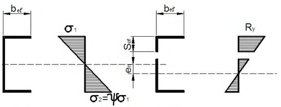
Таблица 7.11Стержни из одиночных кассетных и шляпных профилей
| Конструкция опоры и полок | Конструкция опоры и полок | Опорная реакция или локальная нагрузка | Опорная реакция или локальная нагрузка | С | C r | C b | C h | Ограни- чения |
|---|---|---|---|---|---|---|---|---|
| Закреплен- ная на опоре | На одну полку | Концевая | 4 | 0,25 | 0,68 | 0,04 | 𝑟 𝑡 ≤ 5 ⁄ | |
| Закреплен- ная на опоре | На одну полку | Проме- жуточная | 17 | 0,13 | 0,13 | 0,04 | 𝑟 𝑡 ≤ 10 ⁄ | |
| Закреплен- ная на опоре | На две полки | Концевая | 9 | 0,10 | 0,07 | 0,03 | 𝑟 𝑡 ≤ 10 ⁄ | |
| Закреплен- ная на опоре | На две полки | Проме- жуточная | 10 | 0,14 | 0,22 | 0,02 | 𝑟 𝑡 ≤ 4 ⁄ | |
| Не закреп- ленная на опоре | Полка с отгибом | На одну полку | Концевая | 4 | 0,25 | 0,68 | 0,04 | 𝑟 𝑡 ≤ 4 ⁄ |
| Не закреп- ленная на опоре | Полка с отгибом | На одну полку | Проме- жуточная | 17 | 0,13 | 0,134 | 0,04 | 𝑟 𝑡 ≤ 4 ⁄ |
Таблица 7.12 Профилированные настилы с несколькими стенками
| Конструкция опоры и полок | Опорная реакция или локальная нагрузка | Опорная реакция или локальная нагрузка | С | C r | C b | C h | Ограни- чения |
|---|---|---|---|---|---|---|---|
| Закрепленная на опоре | На одну полку | Концевая | 3 | 0,08 | 0,70 | 0,055 | 𝑟 𝑡 ≤ 7 ⁄ |
| Закрепленная на опоре | На одну полку | Проме- жуточная | 8 | 0,10 | 0,17 | 0,004 | 𝑟 𝑡 ≤ 10 ⁄ |
| Закрепленная на опоре | На две полки | Концевая | 9 | 0,12 | 0,14 | 0,04 | 𝑟 𝑡 ≤ 10 ⁄ |
| Закрепленная на опоре | На две полки | Проме- жуточная | 10 | 0,11 | 0,21 | 0,02 | 𝑟 𝑡 ≤ 10 ⁄ |
| Не закрепленная на опоре | На одну полку | Концевая | 3 | 0,08 | 0,70 | 0,055 | 𝑟 𝑡 ≤ 7 ⁄ |
| Не закрепленная на опоре | На одну полку | Проме- жуточная | 8 | 0,10 | 0,17 | 0,004 | 𝑟 𝑡 ≤ 7 ⁄ |
| Не закрепленная на опоре | На две полки | Концевая | 6 | 0,16 | 0,17 | 0,05 | 𝑟 𝑡 ≤ 5 ⁄ |
| Не закрепленная на опоре | Проме- жуточная | 17 | 0,10 | 0,10 | 0,046 | - |
7.7.13 Расчет перфорированного настила
- 7.7.13.1 Перфорированный настил с круглыми отверстиями, расположенными в углах равностороннего треугольника при соотношении параметров 0,2 d / a 0,9 (см. рисунок 7.23), может быть рассчитан при условии, что при определении сплошного сечения настила учтено ослабление его отверстиями путем введения эффективной толщины, приведенной ниже.
- 7.7.13.2 Характеристики полного сечения рассчитывают по 7.3.1 с заменой t на t a , ef , вычисляемую по формуле
Рисунок 7.23 -Схема расположения отверстий в перфорированном настиле
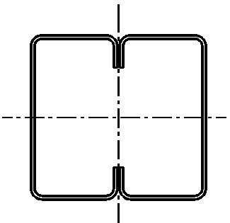
Характеристики эффективного сечения рассчитывают по разделу 7.3.1 с заменой t на t b , еf , вычисляемую по формуле
Несущую способность одной стенки при действии локальной поперечной силы рассчитывают по 7.7.2 с заменой t на t c , ef , вычисляемую по формуле
где h𝑝 -наклонная высота перфорированной части стенки; h𝑤 -общая наклонная высота стенки.
7.7.13.3 Перфорированные сортовые профили (швеллер, Σ-, Си Z-образные) с щелевой перфорацией (см. рисунок 7.24), так называемые термопрофили, следует рассчитывать при условии, что при определении параметров сечения профиля ослабление его отверстиями будет учтено путем введения эффективной толщины.
1; 2 - зоны ослаблений, по которым следует выполнять расчет
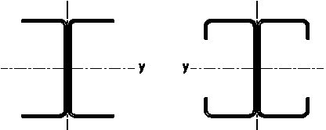
Рисунок 7.24 - Параметры щелевой перфорации термопрофилей
7.7.13.4 В общем случае пластинки (зона 1 , рисунок 7.24) стенки или полки с щелевой перфорацией и неравномерным распределением напряжений по ширине, критическое напряжение может быть определено формулой
h - ширина пластинки (см. рисунок 7.24); h1 - суммарная ширина участков пластинки без просечек; h0 - ширина участка с просечками; 𝑑 - шаг щелевых отверстий в направлении ширины пластинки; 𝑎 -шаг щелевых отверстий вдоль длины пластинки; 𝑐 -длина щелевого отверстия; β - коэффициент, определяемый по таблице 7.13.
Таблица 7.13 Значения коэффициентов β
| a/d | 2,5 | 3,0 | 4,0 | 6,0 | 8,0 | 10,0 | ∞ |
|---|---|---|---|---|---|---|---|
| β | 0,249 | 0,263 | 0,281 | 0,299 | 0,307 | 0,313 | 0,333 |
7.7.13.5 По критическому напряжению определяют приведенную гибкость пластинки
, по которой в соответствии с 7.3.1.7 вычисляют коэффициент редукции ρ и определяют t ef пластинки с перфорациями. Далее расчет проводят в соответствии с 7.3.1.7 и 7.3.1.8 как для профиля, у которого перфорированная стенка имеет приведенную толщину t ef .
7.7.13.6 Размеры просечек, для обеспечения превышения σ cr зоны 2 (рисунок 7.24) перфорации над σ cr всей перфорированной пластинки стенки или полки профиля (см. рисунок 7.24), должны отвечать требованию:
8Кассетные профили, раскрепленные гофрированными листами
8.1Общие положения
Предельный момент Мс для кассетного профиля определяют по 8.2.1 и 8.2.2, с учетом следующего:
- геометрические размеры соответствуют диапазонам, приведенным в таблице 8.1;
- высота гофров на широкой полке hu не превышает h /8, где h -общая высота кассетного профиля.
Таблица 8.1 -Предельные параметры кассетного профиля
| Наименование параметра | Предельные значения параметра |
|---|---|
| Толщина листа | 0,6 мм t nom 1,5 мм |
| Ширина отгиба стенки | 30 мм b f 60 мм |
| Высота стенки | 60 мм h 200 мм |
| Ширина полки | 300 мм b u 600 мм |
| Момент инерции на единицу ширины | I a / b u 10 мм 4 /мм s 1 1000 мм |
Рисунок 8.1 -Типовая геометрия кассетных профилей
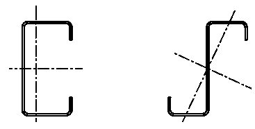
8.2Несущая способность при действии изгибающего момента
8.2.1 Широкая полка сечения сжата
Предельный момент для кассетного профиля при сжатой широкой полке определяют с использованием поэтапной процедуры, представленной на рисунке 8.2:
- этап 1. Определяют эффективную площадь всех сжатых частей поперечного сечения, основываясь на отношении напряжений = 2 / 1 , полученных с использованием эффективной ширины сжатых полок, но при полной площади стенок;
- этап 2. Находят центр тяжести эффективного поперечного сечения и определяют предельный момент Мс по формуле
Рисунок 8.2 -Определение предельного момента при сжатой широкой полке
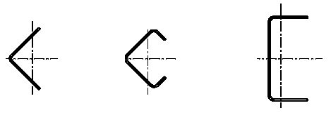
8.2.2 Широкая полка сечения растянута
- 8.2.2.1 Предельный момент для кассетного профиля с растянутой широкой полкой определяют с использованием поэтапной процедуры, представленной на рисунке 8.3:
- этап 1. Определяют центр тяжести полного поперечного сечения;
- этап 2. Определяют эффективную ширину широкой полки bu , ef , с учетом ее возможного искривления, по формуле
где bu -полная ширина широкой полки; е 0 -расстояние от центральной оси полного поперечного сечения до центральной оси узких полок; h -общая высота кассетного профиля;
L -пролет кассетного профиля; t eq -эквивалентная толщина широкой полки, вычисляемая по формуле
где I а -собственный момент инерции сечения широкой полки (см. рисунок 7.19);
- этап 3. Определяют эффективную площадь всех сжатых частей, основываясь на отношении напряжений = 2 / 1 , полученных с использованием эффективной ширины полок, но при полной площади стенок;
- этап 4. Находят центр тяжести эффективного поперечного сечения и определяют несущую способность Мb из условия потери устойчивости плоской формы изгиба, используя следующие выражения:
𝑀𝑏 = 0,8β𝑏𝑊 𝑒𝑓𝑅𝑦 𝑀 𝑏 ≤ 0,8𝑊 𝑒𝑓,𝑡 𝑅𝑦, (8.4) где 𝑊𝑒𝑓 = 𝐼 𝑦,𝑒𝑓 /𝑍𝑐 ; 𝑊𝑒𝑓,𝑡 = 𝐼𝑦,𝑒𝑓 /𝑍𝑐 ; b -поправочный коэффициент, равный: b = 1,0 - при s 1 300 мм; b = 1,15 - при 300 мм s 1 1000 мм; s 1 -расстояние между метизами (шаг), раскрепляющие узкие полки из плоскости (см. рисунок 8.1).
Искривление полки при определении прогибов не учитывается.
- 8.2.2.2 Для упрощения практических расчетов момент, воспринимаемый кассетным профилем с широкой полкой без элементов жесткости, может быть определен, приближенно принимая эффективную площадь сечения растянутой широкой полки равной площади сечения двух сжатых узких полок.
Рисунок 8.3 -Определение предельного момента при растянутой широкой полке
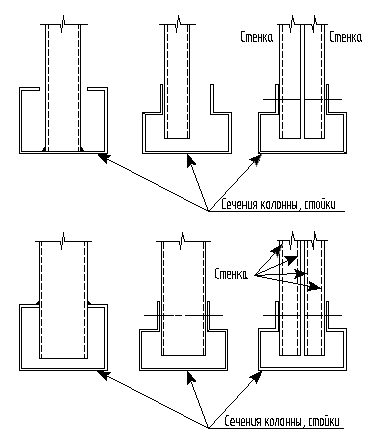
9Предельное состояние по деформациям конструкций
где com , n -максимальное сжимающее напряжение от реальной нормативной нагрузки (рассчитанное на основе эффективного поперечного сечения) в соответствующем элементе.
где I g - момент инерции полного поперечного сечения;
g - максимальное сжимающее напряжение от изгиба, при расчете по второй группе предельных состояний, основанное на полном поперечном сечении (в формуле со знаком «плюс»);
I ( ) ef - момент инерции эффективного поперечного сечения, с учетом потери местной устойчивости, вычисленной при максимальном напряжении σ𝑔 . Максимальным напряжением является наибольшее по абсолютному значению напряжение в пределах рассматриваемой расчетной длины элемента.
10Расчет соединений
10.1Расчет несущей способности элементов в соединениях на метизах
где 𝑑𝑏 - номинальный внутренний диаметр резьбы по дну впадины самонарезающего винта, диаметр заклепки или дюбеля;
Σt - наименьшая суммарная толщина соединяемых элементов;
𝑅𝑏𝑝 - расчетное сопротивление стали соединяемых элементов по пределу прочности; γ𝑏 -коэффициент условий работы болтового соединения по СП 16.13330.2011 (таблица 41); γ𝑐 -коэффициент условий работы соединяемых элементов (см. таблицу 5.1).
где 𝐹 𝑛𝑛 - нормативное сопротивление метиза на растяжение; γ𝑚 - коэффициент безопасности по материалу метиза, γ𝑚 = 1,25 .
для заклепок: где d - номинальный диаметр метиза; t
- толщина более тонкого из соединяемых элементов; t
1 - толщина более толстого из соединяемых элементов; α - коэффициент, определяемый по таблице 10.1; γ𝑚 - коэффициент безопасности основного металла.
где 𝑅𝑢 - расчетное сопротивление стали по пределу прочности; 𝑑𝑤 - диаметр головки (стальной шайбы) самонарезающего винта (дюбеля) + толщина наиболее тонкого из соединяемых элементов.
Для ветровых нагрузок в сочетании с постоянными нагрузками и без них:
Таблица 10.1 Значения коэффициента α
| Наименование крепежного элемента | Формулы для определения коэффициента α |
|---|---|
| Вытяжные заклепки | при t = t 1 α = 3,6√ 𝑡 𝑑 ⁄ ≤ 2,1; 𝐹 𝑏 ≤ 𝑅 𝑢𝑛 𝑒 1 𝑡 1,2γ 𝑚 при t 1 ≥2,5 t α = 2,1 при t < t 1 ≤2,5 t α - по линейной интерполяции |
| Самонарезающие винты | при t = t 1 α = 3,2√ 𝑡 𝑑 ⁄ ≤ 2,1; при t 1 ≥2,5 t и t <1,0 мм α = 3,2√ 𝑡 𝑑 ⁄ ≤ 2,1; при t 1 ≥2,5 t и t ≥1,0 мм α = 2,1; при t < t 1 ≤2,5 t α - по линейной интерполяции |
| Дюбели | α = 3,2√ 𝑡 𝑑 ⁄ ≤ 2,1 |
| Болты | при 0,75 ≤ t ≤1,25 мм при t > 1,25 мм α = 1,33 |
где γ𝑚 - коэффициент безопасности по материалу метиза, γ𝑚 = 1,25 .
При соблюдении условий:
𝐹 𝑠 < 1,2𝐹 𝑟𝑝 или ∑𝐹 𝑠 < 1,2𝐹 𝑛 - для заклепок;
𝐹 𝑠 < 1,2𝐹 𝑠𝑝 или ∑𝐹 𝑠 < 1,2𝐹 𝑛 - для самонарезающих винтов;
𝐹 𝑠 < 1,5𝐹 𝑑𝑝 или ∑𝐹 𝑠 < 1,5𝐹 𝑛 - для дюбелей.
где t sup -толщина опорного элемента, к которому крепится винт или дюбель; s -шаг резьбы.
Несущую способность дюбелей на выдергивание Fd 0 определяют испытаниями по нормативному значению разрушающей нагрузки на срез Fd 0 n
где γ𝑚 - коэффициент безопасности по материалу метиза, γ𝑚 = 1,25 .
10.2Требования к расстановке метизов в соединениях
Рисунок 10.1 -Расположение метизов в соединениях
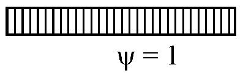
Таблица 10.2 -Минимальные допустимые расстояния между метизами и от их осей до краев соединяемых элементов
В миллиметрах
| Тип метиза | Тип метиза | Тип метиза | Тип метиза | |
|---|---|---|---|---|
| Размер по рисунку 10.1 | Заклепка 2,6 ≤ d ≤ 6,4 | Винт самонарезающий 3,0 ≤ d ≤ 8,0 | Дюбель 2,6 ≤ d ≤ 6,4 | Болт (минимальный размер М6*) |
| е 1 | 1,5 d 0 | 3,0 d 0 | 4,5 d 0 | 2,0 d 0 |
| е 2 | 1,5 d 0 | 1,5 d 0 | 4,5 d 0 | 1,5 d 0 |
| р 1 | 3,0 d 0 | 3,0 d 0 | 4,5 d 0 | 2,5 d 0 |
| р 2 | 3,0 d 0 | 3,0 d 0 | 4,5 d 0 | 2,5 d 0 |
| * По ГОСТ Р ИСО 8765. | * По ГОСТ Р ИСО 8765. | * По ГОСТ Р ИСО 8765. | * По ГОСТ Р ИСО 8765. | * По ГОСТ Р ИСО 8765. |
- момент закручивания должен быть более, чем момент, требуемый для нарезания резьбы в соединяемом элементе;
- момент закручивания должен быть менее, чем момент, вызывающий срез резьбы или головки метиза;
- момент закручивания должен быть менее 2/3 момента, срезающего головку метиза;
- закладная головка заклепки, а также головки самонарезающих винтов и дюбелей расположены над более тонким из соединяемых листов;
- приведенные выше правила расчета вытяжных заклепок применимы только в тех случаях, когда диаметр отверстия превышает диаметр заклепки не более чем на 0,1 мм.
10.3Требования и правила проектирования соединений, выполненных точечной сваркой
Несущую способность на смятие и разрыв Nc вычисляют по формулам
где t - толщина наиболее тонкого присоединенного элемента или листа, мм; t
1 - толщина наиболее толстого присоединенного элемента или листа; ds - внутренний диаметр электрозаклепки, равный:
- при сварке проплавлением 𝑑𝑠 = 0,5𝑡 + 5 мм;
- при сварке сопротивлением 𝑑𝑠 = 5√𝑡.
Несущую способность края элемента на вырыв Np вычисляют по формуле
Несущую способность сечения нетто Nn вычисляют по формуле
где Anet - площадь поперечного сечения нетто соединяемого элемента;
Несущую способность на срез Ns вычисляют по формуле
𝑁
Примечание - В соединении должны соблюдаться следующие условия:
Расположение точек сварки в соединении приведены на рисунке 10.1, где 2𝑑𝑠 ≤ 𝑒1 ≤ 6𝑑𝑠; 3𝑑𝑠 ≤ 𝑝1 ≤ 8𝑑𝑠; 𝑒2 ≤ 4𝑑𝑠; 3𝑑𝑠 ≤ 𝑝2 ≤ 6𝑑𝑠.
Рисунок 10.2 -Образцы для испытаний на срез сварных точек
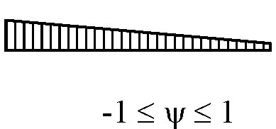
10.4Требования к проектированию сварных соединений с угловыми швами
10.5Дуговая точечная сварка
Рисунок 10.3 -Дуговая точечная сварка со сварной шайбой
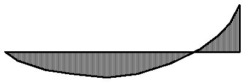
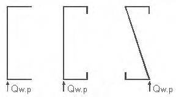
а) присоединение одного листа (Σ t = t )
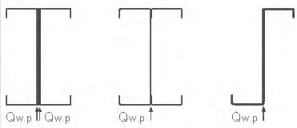
- б) присоединение двух листов (Σ t=t 1 +t 2 )
- в) присоединение одного листа с применением сварной шайбы
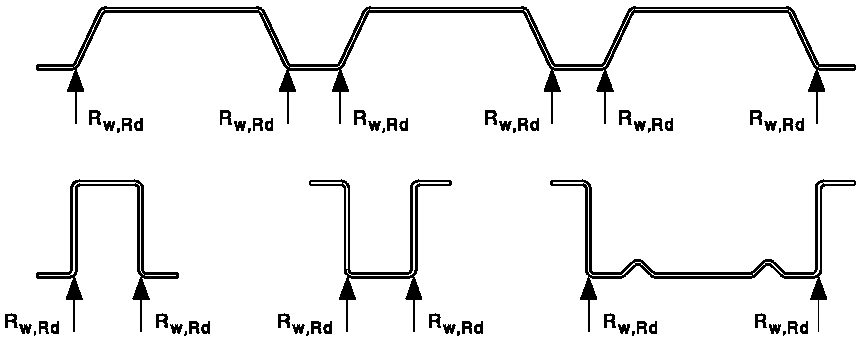
Рисунок 10.4 -Точечная дуговая сварка
где 𝑅𝑤𝑓 -расчетное сопротивление по материалу сварной точки; ds - внутренний диаметр сварной точки, вычисляемый по формуле
где d w -видимый диаметр дуговой сварной точки (см. рисунок 10.4).
𝑁𝑤 не должно превышать значений, определяемых из следующих условий:
при условии, что 𝑁𝑤 не превышает значений, вычисляемых по формуле
где Lw -длина овальной сварной точки (см. рисунок 10.5).
Рисунок 10.5 -Овальная сварная точка
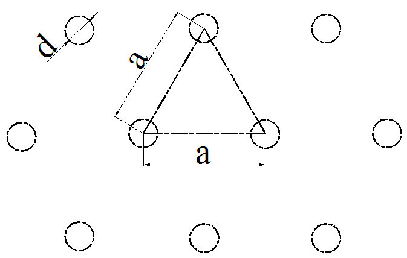
11Требования к программному обеспечению для расчетов конструкций из стальных тонкостенных холодногнутых оцинкованных профилей
12Требования по обеспечению коррозионной стойкости
В настоящем разделе определены технические требования к защите от коррозии строительных конструкций зданий и сооружений при воздействии газообразных агрессивных сред с температурой от минус 55°С до 100 °С.
1) сведения о климатических условиях района по СП 131.13330.
2) характеристики газовой агрессивной среды (газы, аэрозоли): вид и концентрация агрессивного вещества, температура и влажность среды в здании (сооружении) и снаружи с учетом преобладающего направления ветра, а также с учетом возможного изменения характеристик среды в период эксплуатации строительных конструкций;
3) механические, термические и биологические воздействия на строительные конструкции.
СП 260.1325800.2016
Таблица 12.1 -Минимальная толщина листов ограждающих конструкций
В миллиметрах
| Степень | Минимальная толщина листов ограждающих конструкций, применяемых без защиты от коррозии лакокрасочными покрытиями | Минимальная толщина листов ограждающих конструкций, применяемых без защиты от коррозии лакокрасочными покрытиями |
|---|---|---|
| агрессивного воздействия среды | из углеродистой стали с цинковыми покрытиями 1-го класса по ГОСТ 14918 или класса не менее Z275 по ГОСТ Р 52246, а также алюмоцинковыми покрытиями классов ZA255 или AZ150 по ГОСТ 4784 | из стали марок 10ХНДП, 10ХДП |
| Неагрессивная | 0,5 | Определяется агрессивностью воздействия на наружную поверхность* |
| Слабоагрессивная | - | 0,8 |
Таблица 12.2 Степень агрессивного воздействия газообразных сред на металлические конструкции
| Влажностный режим помещений __________________________________________________________________ Зона влажности (по СП 131.13330) | Группы газов (по СП 28.13330, таблица Б.1) | Степень агрессивного воздействия среды на металлические конструкции | Степень агрессивного воздействия среды на металлические конструкции | Степень агрессивного воздействия среды на металлические конструкции |
|---|---|---|---|---|
| Влажностный режим помещений __________________________________________________________________ Зона влажности (по СП 131.13330) | Группы газов (по СП 28.13330, таблица Б.1) | внутри отапливаемых зданий | внутри неотапливаемых зданий или под навесами | на открытом воздухе |
| Сухой ________________________ Сухая | А В С D | Неагрессивная То же Слабоагрессивная Среднеагрессивная | Неагрессивная Слабоагрессивная Среднеагрессивная То же | Слабоагрессивная То же Среднеагрессивная Сильноагрессивная |
| Нормальный ________________________________________________ Нормальная | А В С D | Неагрессивная Слабоагрессивная То же Среднеагрессивная | Слабоагрессивная Среднеагрессивная То же Сильноагрессивная | Слабоагрессивная Среднеагрессивная То же Сильноагрессивная |
| Влажный или мокрый _________________________________________________ Влажная | А В С D | Среднеагрессивная То же Сильноагрессивная То же | Среднеагрессивная То же Сильноагрессивная То же | Среднеагрессивная То же Сильноагрессивная То же |
Таблица 12.3 Степень агрессивного воздействия твердых сред на металлические конструкции
| Влажностный режим помещений | Растворимость твердых сред | Степень агрессивного воздействия среды на металлические конструкции | Степень агрессивного воздействия среды на металлические конструкции | Степень агрессивного воздействия среды на металлические конструкции |
|---|---|---|---|---|
| ____________________________________________________ Зона влажности (по СП 131.13330) | в воде * и их гигроскопичность | внутри отапливаемых зданий | внутри неотапливаемых зданий или под навесами | на открытом воздухе |
| Сухой ____________________________________ Сухая | Малорастворимые | Неагрессивная | Неагрессивная | Слабоагрессивная |
| Сухой ____________________________________ Сухая | Хорошо растворимые малогигроско- пичные | То же | Слабоагрессивная | То же |
| Сухой ____________________________________ Сухая | Хорошо растворимые гигроскопичные | Слабоагрессивная | То же | Среднеагрессивная |
| Нормальный _____________________________________________________________ Нормальная | Малорастворимые | Неагрессивная | Слабоагрессивная | Слабоагрессивная |
| Нормальный _____________________________________________________________ Нормальная | Хорошо растворимые малогигроско- пичные | Слабоагрессивная | Среднеагрессивная | Среднеагрессивная |
| Нормальный _____________________________________________________________ Нормальная | Хорошо растворимые гигроскопичные | Среднеагрессивная | Среднеагрессивная | Среднеагрессивная |
| Влажный или мокрый _____________________________________________________________ Влажная | Малорастворимые | Слабоагрессивная | Слабоагрессивная | Слабоагрессивная |
| Влажный или мокрый _____________________________________________________________ Влажная | Хорошо растворимые | Среднеагрессивная | Среднеагрессивная | Среднеагрессивная |
| Влажный или мокрый _____________________________________________________________ Влажная | малогигроскопичн ые Хорошо растворимые | То же | То же | Сильноагрессивная |
СП 260.1325800.2016 профилей и ограждающие конструкции из тонколистовой оцинкованной стали с дополнительным лакокрасочным покрытием допускается применять в условиях слабоагрессивного воздействия среды.
13Требования по пожарной безопасности и огнестойкости
АПриложение А. (обязательное)
Специальные требования к конструкциям
А.1Требования к прогонам и подобным балочным конструкциям
А.1.1 Требования, приведенные в настоящем подразделе, могут быть применены для прогонов и балок, Z-, С-, -, U-образного и шляпного поперечного сечения с h / t < 233 -для высоты стенки, с / t 20 -для одиночного отгиба и d / t 20 -для двойного краевого отгиба.
А.1.2 Требования настоящего подраздела применяют для раскрепленных из плоскости изгиба неразрезных прогонов, соединенных внахлестку или накладками.
А.1.3 Настоящие требования допускается также применять для холодноформованных элементов, используемых в качестве фахверка, балок перекрытий и других подобных типов балок, которые обычно раскреплены настилом.
А.1.4 Полное непрерывное раскрепление из плоскости изгиба может создаваться стальным настилом с трапециевидными гофрами или другим профилированным стальным листом с конечной жесткостью, непрерывно соединенным с полкой прогона через нижние полки настила. Прогон, соединенный с настилом с трапециевидными гофрами, может считаться раскрепленным из плоскости, если выполняются требования А.1.5. В других случаях (например, при креплении настила через верхние полки) степень закрепления должна основываться либо на опыте, либо определяться испытаниями.
А.1.5 Прогон можно считать раскрепленным в плоскости настила, если настил с трапециевидными гофрами соединен с прогоном и выполнено условие
где S -сдвиговая жесткость на единицу длины прогона, обеспеченная настилом по А.1.9 или кассетными панелями по А.1.10 для рассматриваемого элемента, соединенным с ним в каждой волне (если настил крепится к прогону через волну, то вместо S следует принимать 0,2 S );
Iw -секториальный момент инерции сечения прогона;
I t -момент инерции прогона при свободном кручении;
I z -момент инерции прогона относительно второстепенной главной оси;
L -пролет прогона; h -высота прогона.
Примечание - Формулу (А.1) допускается также применять для оценки устойчивости поясов балок из плоскости в сочетании с другими типами настила, при обосновании их соответствующим расчетом.
А.1.6 Прогон должен иметь на опорах детали, препятствующие его кручению и горизонтальному боковому смещению на опорах. Влияние усилий в плоскости настила, которые передаются на опоры прогона, необходимо учитывать при расчете опорных деталей.
А.1.7 Соединение прогона с настилом может допускать частичное закрепление прогона от кручения, которое может быть представлено в виде угловой связи с жесткостью СD . Напряжения в свободном поясе, не соединенном непосредственно с настилом, следует также рассчитывать с учетом влияния изгиба в рабочей плоскости и кручения, включая изгиб из плоскости в результате искривления поперечного сечения.
А.1.8 Если свободный пояс однопролетного прогона сжат при отрицательной нагрузке, то в расчете должно быть учтено увеличение напряжений от кручения и изгиба.
А.1.9 Сдвиговую жесткость на единицу длины настила с трапециевидными гофрами Sn , H, соединенного с прогоном в каждой волне, определяют на основании эксперимента либо по формуле
где t -расчетная толщина настила, мм; broof -ширина настила по скату, мм; s -шаг прогонов, мм; hw -высота гофров настила, мм.
А.1.10 Сдвиговую жесткость кассетных профилей Sk , H, вычисляют по формуле
где L - общая длина сдвиговой диафрагмы вдоль пролета кассетных профилей, мм; b - общая ширина сдвиговой диафрагмы, мм; b k - ширина кассетного профиля, мм; α - коэффициент жесткости при отсутствии экспериментальных данных (может быть принят равным 2000 Н/мм).
А.2Расчет прогонов и балочных конструкций
- А.2.1 Прогоны С-образного и Z-образного сечений с дополнительными элементами жесткости на стенке или полке или без них рассчитывают, при выполнении следующих условий:
- размеры поперечного сечения находятся в пределах, указанных в таблице А.1;
- прогоны раскреплены из плоскости настилом с трапециевидными гофрами, причем горизонтальное раскрепление должно быть непрерывным;
- прогоны раскреплены от поворота профилированным настилом с трапециевидными гофрами и удовлетворены условия;
- прогоны имеют равные пролеты и равномерно нагружены.
Этот метод не может быть использован:
- для систем, использующих стержни в качестве раскрепления;
- систем с перехлестом и на накладках;
- если приложены осевые силы Nr .
Таблица А.1 -Ограничения в случае применения приближенного метода расчета
| Прогоны | t , мм | b / t | h / t | h / b | c / t | b / c | L / h |
|---|---|---|---|---|---|---|---|
| 1,2 | 55 | 160 | 3,43 | 20 | 4,0 | 15 | |
| 1,2 | 55 | 160 | 3,43 | 20 | 4,0 | 15 |
А.2.2 Расчетное значение изгибающего момента М должно удовлетворять следующему условию:
где 𝑀 𝐿𝑇,𝑝 = 𝑅𝑦 ∙ 𝑊 𝑒𝑓,𝑦 ∙ χ𝐿𝑇 𝑘𝑑 ;
Wef , y -момент сопротивления эффективного поперечного сечения относительно оси y ; χ𝐿𝑇 -коэффициент, учитывающий потерю устойчивости плоской формы изгиба kd -коэффициент, учитывающий, что часть прогона не раскреплена, определяемый по формуле (А.5) и таблице А.2:
α1, α2 -коэффициенты (см. таблицу А.2);
L -пролет прогона; h -общая высота прогона.
Таблица А.2 -Коэффициенты α1 и α2 для формулы (А.5)
| Система | Z-образный прогон | Z-образный прогон | С-образный прогон | С-образный прогон | -образный прогон | -образный прогон |
|---|---|---|---|---|---|---|
| α 1 | α 2 | α 1 | α 2 | α 1 | α 2 | |
| Однопролетная балка, нагрузка вниз | 1,0 | 0 | 1,1 | 0,002 | 1,1 | 0,002 |
| Однопролетная балка, нагрузка вверх | 1,3 | 0 | 3,5 | 0,050 | 1,9 | 0,020 |
| Неразрезная балка, нагрузка вниз | 1,0 | 0 | 1,6 | 0,020 | 1,6 | 0,020 |
| Неразрезная балка, нагрузка вверх | 1,4 | 0,01 | 2,7 | 0,040 | 1,0 | 0 |
А.2.3 Редукционный коэффициент χ LT = 1, если однопролетная балка работает под нагрузкой, действующей вниз, или в других случаях, если удовлетворено следующее условие:
где Мel , u -момент в полном поперечном сечении относительно главной оси u в пределах упругости:
I v -момент инерции полного поперечного сечения относительно второстепенной оси v ; k -коэффициент, учитывающий статическую схему прогона (таблица А.3).
СD - жесткость угловой связи, определяемая по формуле (А.6).
Примечание -Для С-образных сечений прогонов с равными полками Iv = Iх Wu = Wy и Мu = My .
Таблица А.3 -Значения коэффициента k
| Статическая схема | Значение коэффициента k при приложении нагрузки | Значение коэффициента k при приложении нагрузки |
|---|---|---|
| Статическая схема | вниз | вверх |
| - | 0,210 | |
| 0,07 | 0,029 | |
| 0,15 | 0,066 | |
| 0,10 | 0,053 |
А.2.4 Для случаев, которые не рассматриваются в А.2.3, коэффициент φ b рассчитывают по СП 16.13330. Предельный момент при потере устойчивости плоской формы изгиба в упругой стадии Mcr вычисляют по формуле
где 𝐼 𝑡 ∗ -фиктивный момент инерции при свободном кручении, учитывающий эффективность закрепления от кручения, вычисляемый по формуле
здесь I t -момент инерции при свободном кручения для прогона;
СD , A и CD , C -крутильные жесткости по А.2.5, А.2.9; k -коэффициент, учитывающий потерю устойчивости плоской формы изгиба с закручиванием и определяемый по таблице А.4.
,
Таблица А.4 -Коэффициент k потери устойчивости плоской формы изгиба с закручиванием для прогонов с горизонтально закрепленной верхней полкой при кручении
| Статическая схема | Значение коэффициента k при приложении нагрузки | Значение коэффициента k при приложении нагрузки |
|---|---|---|
| Статическая схема | вниз | вверх |
| | 10,3 | |
| 17,7 | 27,7 | |
| 12,2 | 18,3 | |
| 14,6 | 20,5 |
- А.2.5 Значение крутильной жесткости CD , A , создаваемой настилом с трапециевидными гофрами, соединенным с верхней полкой прогона, с учетом того, что крепления настила к прогону расположены в середине его полки, может быть определено по формуле
Значения коэффициентов при толщинах 0,7 мм < t < 1,0 мм допускается определять линейной интерполяцией: при t < 0,70 мм - формула недействительна; при t > 1,0 мм - в формулу подставляют t = 1,0 мм;
- для подъемной нагрузки (например, отрицательный ветер):
где A 12 -нагрузка, передаваемая балке настилом, кН/м; ba -ширина полки прогона, мм; bR -ширина волны настила, мм; bT -ширина полки настила, прикрепленной к прогону; bT ,max -по таблице А.5;
С 100 -коэффициент поворота, равный СD , A , при ba = 100 мм.
- А.2.6 Если между настилом и прогонами нет зазора, то значение коэффициента поворота С 100 определяют по таблице А.5.
- А.2.7 Рекомендуется значение СD , A может быть принят равным 130 р , кНм/м, где р -количество креплений настила к прогону на 1 пог. м его длины (но не более чем одно на волну настила), при соблюдении следующих условий:
- ширина b полки настила, которой он крепится, не должна превышать 120 мм;
- номинальная толщина t настила не менее 0,65 мм;
- расстояние а или b -a (зависящее от направления поворота) между центром метиза и центром поворота прогона не менее 25 мм.
- А.2.8 Если учитывают влияние искривления поперечного сечения, то допускается не учитывать CD , C , так как жесткость связи, в основном, зависит от значения CD , A и искривления сечения.
Таблица А.5 -Коэффициент поворота С 100 для стального настила с трапециевидными гофрами
| Положение настила | Положение настила | Настил закреплен через полку | Настил закреплен через полку | Шаг креплений | Шаг креплений | Диаметр шайбы, мм | С 100, | b T ,max , |
|---|---|---|---|---|---|---|---|---|
| благо- приятное | неблаго- приятное | нижнюю | верхнюю | в каждой волне е = b R | через волну e = 2 b R | Диаметр шайбы, мм | кНм/м | мм |
| Для нагрузки, направленной вниз | Для нагрузки, направленной вниз | Для нагрузки, направленной вниз | Для нагрузки, направленной вниз | Для нагрузки, направленной вниз | Для нагрузки, направленной вниз | Для нагрузки, направленной вниз | Для нагрузки, направленной вниз | Для нагрузки, направленной вниз |
| × | × | × | 22 | 5,2 | 40 | |||
| × | × | × | 22 | 3,1 | 40 | |||
| × | × | × | К а | 10,0 | 40 | |||
| × | × | × | К а | 5,2 | 40 | |||
| × | × | × | 22 | 3,1 | 120 | |||
| × | × | × | 22 | 2,0 | 120 | |||
| Для нагрузки, направленной вверх | Для нагрузки, направленной вверх | Для нагрузки, направленной вверх | Для нагрузки, направленной вверх | Для нагрузки, направленной вверх | Для нагрузки, направленной вверх | Для нагрузки, направленной вверх | Для нагрузки, направленной вверх | Для нагрузки, направленной вверх |
| × | × | × | 16 | 2,6 | 40 | |||
| × | × | × | 16 | 1,7 | 40 |
Примечания
1 В настоящей таблице применены следующие обозначения: bR -ширина волны; bT -ширина полки настила, в месте крепления к прогону.
× - сочетание условий по положению настила, закреплению и шагу крепления.
2 Значения настоящей таблицы применимы для крепления настила самонарезающими винтами диаметром Ø = 6,3 мм, стальных шайб толщиной tw 1,0 мм.
А.2.9 Положение настила по таблице А.5 считается благоприятным, если его узкие полки расположены на прогоне, и неблагоприятным, если на прогоне расположены его широкие полки.
А.2.10 Рекомендуется значение СD , C с запасом определять по формуле
где k определяется по таблице А.4.
А.2.11 Момент инерции эффективного сечения I ef (или I fic ) может быть принят переменным вдоль пролета. Рекомендуется использовать постоянное значение момента инерции, полученное исходя из максимального абсолютного момента в пролете от нормативной нагрузки.
А.2.12 Прогибы допускается определять в предположении упругой работы стали.
А.2.13 В расчете прогибов, усилий и моментов следует учитывать влияние податливости соединений (например, в случае неразрезных балочных систем с соединениями внахлестку и на накладках).
А.2.14 Метизы, прикрепляющие настил к прогону, следует проверять на совместное действие срезающего усилия qse , перпендикулярного полке и растягивающего усилия qt ∙ e , где е -шаг креплений, q s и q t допускается рассчитывать по таблице А.6. Срезающее усилие от настила, действующего как диафрагма, направлено параллельно полке и суммируется с qs геометрически.
Таблица А.6 -Срезающее и растягивающее усилия на метиз крепления вдоль балки
| Балка | Приложение нагрузки | Срезающее усилие на единицу длины q s | Растягивающее усилие на единицу длины q t |
|---|---|---|---|
| Z-образная | вниз | (1 +ξ)𝑘 h 𝑞 может быть принято равным 0 | 0 |
| Z-образная | вверх | (1 +ξ)(𝑘 h - 𝑎 h ⁄ )𝑞 | (ξ𝑘 h 𝑞 h 𝑎 ⁄ ) +𝑞; 𝑎 ≅ 𝑏 2 ⁄ |
| С-образная | вниз | (1 -ξ)𝑘 h 𝑞 | ξ𝑘 h 𝑞 h 𝑎 ⁄ |
| С-образная | вверх | (1 -ξ)(𝑘 h - 𝑎 h ⁄ )𝑞 | (ξ𝑘 h 𝑞 h (𝑏 -𝑎) ⁄ )+𝑞 |
А.2.15 Метизы, закрепляющие прогоны на опорах, необходимо проверять на действие реакции Rw в плоскости стенки и поперечных реакций R 1 и R 2 в плоскостях полок (рисунок А.1). Силы R 1 и R 2 определяют по формулам, приведенным в таблице А.7. Сила R 2 от настила, выполняющего роль диафрагмы жесткости, включает в себя также скатную составляющую для кровель с уклоном. Если R 1 положительна, то растягивающая сила в метизе крепления отсутствует. R 2 передается от настила к верхней полке прогона и далее на стропильную конструкцию (главную балку) через соединительный (опорный) элемент или с помощью специальных сдвиговых коннекторов, или непосредственно на основной или аналогичный элемент. Реакции на промежуточных опорах неразрезного прогона принимают в 2,2 раза более значений, приведенных в таблице А.7.
Примечание -Для наклонных кровель поперечные нагрузки на прогон рассматриваются как составляющие вертикальной нагрузки, направленные перпендикулярно плоскости кровли и параллельно этой плоскости.
Рисунок А.1 -
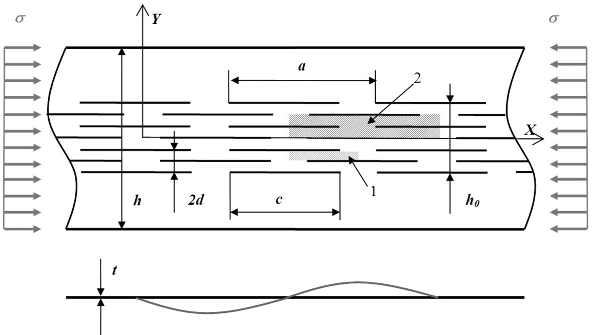
Реакции на опоре
Таблица А.7 -Реакции на опоре свободно опертой балки
| Балка и нагрузка | Реакция на нижний пояс R 1 | Реакция на верхний пояс R 2 |
|---|---|---|
| Z-образная, нагрузка вниз | (1 -Ϛ)𝑘 h 𝑞 𝐿 2 ⁄ | (1 +Ϛ)𝑘 h 𝑞 𝐿 2 ⁄ |
| Z-образная, нагрузка вверх | -(1 -Ϛ)𝑘 h 𝑞 𝐿 2 ⁄ | -(1 +Ϛ)𝑘 h 𝑞 𝐿 2 ⁄ |
| С-образная, нагрузка вниз | -(1 -Ϛ)𝑘 h 𝑞 𝐿 2 ⁄ | (1 -Ϛ)𝑘 h 𝑞 𝐿 2 ⁄ |
| С-образная, нагрузка вверх | (1 -Ϛ)𝑘 h 𝑞 𝐿 2 ⁄ | -(1 -Ϛ)𝑘 h 𝑞 𝐿 2 ⁄ |
Коэффициент Ϛ принимают равным Ϛ = √𝑘𝑅 3 , где kR - коэффициент, приведенный по формулам А.14 и А15, и коэффициент ξ принимают равным ξ = √Ϛ 𝟑 .
- А.2.16 Поправочный коэффициент kR для рассматриваемой точки и соответствующих граничных условий неразрезной многопролетной балки вычисляют по формулам:
- для второй от крайней промежуточной опоры
- для остальных промежуточных опор где 𝑅 = 𝐾𝐿𝑎 4 π 4 𝐸𝐼 𝑓𝑧 , здесь I fz -момент инерции полного поперечного сечения свободной полки при изгибе относительно оси z-z ;
К -погонная боковая жесткость связи по А.2.17;
La -расстояние между раскреплениями, а при их отсутствии -пролет L прогона.
- А.2.17 Погонную боковую жесткость связи К на единицу длины вычисляют по формуле
где t -толщина прогона;
СD -общая жесткость угловой связи по формуле (А.10); h -общая высота прогона; hd -развернутая высота стенки прогона. bmod определяют:
- для случаев, когда эквивалентная горизонтальная сила d h E q , действует на стенку прогона в месте его контакта с настилом, bmod = а ;
- для случаев, когда эквивалентная горизонтальная d h E q , сила действует на полку прогона в месте его контакта с настилом, bmod = 2 а + b , здесь а -расстояние от метиза крепления настила к прогону до его стенки; b -ширина полки прогона, соединенной с настилом.
А.3Проектирование зданий с учетом диафрагмы жесткости из гофрированного листа
А.3.1 Общие положения
А.3.1.1 В настоящем подразделе рассматривается взаимодействие между конструктивными элементами и настилом, работающими совместно как части комбинированной конструкции. Требования настоящего подраздела относятся только к диафрагмам, изготовленным из стали.
А.3.1.2 Диафрагмы могут быть образованы из гофрированного листа, применяемого в покрытии, стеновом ограждении или перекрытиях. Они также могут быть образованы в стенах или покрытиях из кассетных профилей.
А.3.2 Работа диафрагмы
А.3.2.1 В расчете необходимо учитывать, что, вследствие своей сдвиговой жесткости и прочности, диафрагмы из настила покрытий, перекрытий или обшивки стены увеличивают общую жесткость и прочность каркаса.
А.3.2.2 Покрытия и перекрытия рассматривают как балки-стенки, расположенные по всей длине здания, воспринимающие горизонтальные поперечные нагрузки в своей плоскости и передающие их на торцы или промежуточные связевые рамы. Металлический настил рассматривают как стенку балки, воспринимающую сдвигающие поперечные нагрузки в ее плоскости, а краевые элементы -как пояса балки, воспринимающие осевые растягивающие и сжимающие усилия (см. рисунки А.1 и А.2).
А.3.2.3 Прямоугольные стеновые панели рассматривают упрощенно -как связевые системы, работающие в качестве диафрагмы и воспринимающие усилия в своей плоскости.
А.3.3 Условия применения гофрированного листа в качестве диафрагмы жесткости
А.3.3.1 Расчет с учетом работы диафрагмы, являющейся составной частью несущего каркаса, используют только при следующих условиях:
- гофрированный лист кроме обеспечения своей основной функции должен обладать достаточной сдвиговой жесткостью, чтобы препятствовать перемещениям конструкций в плоскости настила;
- диафрагмы должны иметь продольные краевые элементы, воспринимающие усилия в поясах, возникающие при работе диафрагмы;
- усилия от диафрагм покрытий и перекрытий передаются к фундаментам через связевые рамы, другие диафрагмы или другими методами, препятствующими смещению рам;
- несущая способность соединений должна соответствовать усилиям, передающимся от диафрагмы на основной стальной каркас и объединяющим настил с краевыми элементами для работы в качестве поясов;
- гофрированный лист рассматривается как неотъемлемая конструктивная часть каркаса, которая не может быть удалена без надлежащей компенсации;
- в проекте, включающем расчеты и чертежи, должно быть обязательно отмечено, что здание запроектировано с учетом работы диафрагмы жесткости;
- для настила, гофры которого ориентированы вдоль покрытия, усилия в поясах, возникающие при работе диафрагмы, могут быть восприняты самим настилом.
- сдвиговая жесткость не зависит от направления действия сдвигающей силы (вдоль или поперек гофров);
- поперечная нагрузка не влияет на сдвиговую жесткость настила. а -настил; b -зона сдвига в настиле; c -усилия в поясах краевых элементов
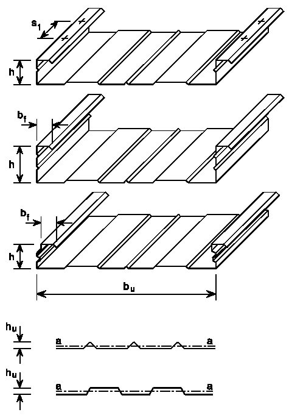
Рисунок А.2 -Работа диафрагмы в здании с плоским покрытием
А.3.3.2 Расчет с учетом работы вертикальных диафрагм жесткости используется, прежде всего, для невысоких зданий или для перекрытий и фасадов высоких каркасных зданий.
А.3.3.3 Диафрагмы рекомендуется использовать для восприятия ветровых, снеговых и других нагрузок, передающихся непосредственно через настил. Они также могут использоваться для восприятия небольших подвижных нагрузок, таких как тормозные усилия от легких подвесных кранов или подъемников на монорельсах, но не могут применяться для восприятия длительных внешних нагрузок, таких как нагрузка от оборудования и мостовых кранов.
СП 260.1325800.2016 a -настил; b -усилия в поясах краевых элементов; c -зона сдвига в настиле; d -затяжка, требуемая для восприятия усилий от кровельного покрытия
Рисунок А.3 -Работа диафрагмы в здании с двухскатной кровлей
А.3.4 Диафрагмы из стального гофрированного листа
А.3.4.1 В диафрагме из гофрированного листа (рисунок А.3) оба торца листов должны быть закреплены на опорных элементах самонарезающими винтами, дюбелями, сваркой, болтами или другими типами креплений. Соединения должны работать без отказа, не выдергиваться или не срезаться до разрушения настила. Все типы креплений следует устанавливать непосредственно через настил в опорный элемент, например, через гофры гофрированных листов, если не предусмотрены специальные меры по обеспечению эффективной передачи усилий, определяемых расчетом.
А.3.4.2 Балку можно рассматривать как непрерывно раскрепленную от бокового смещения в плоскости настила, если гофрированный лист (с трапецеидальными гофрами) соединен со сжатой полкой балки и выполняется следующее условие формулы, то:
где S - сдвиговая жесткость (на единицу длины балки), обеспеченная креплением гофрированного листа к балке в каждой волне, при деформации балки в плоскости настила;
I z -момент инерции поперечного сечения относительно второстепенной оси поперечного сечения (из плоскости балки);
L - длина балки; h - высота балки.
Если гофрированный лист прикреплен к балке через волну, сдвиговую жесткость следует принимать равной 0,2 S .
Примечание Формулу (А.17) допускается также использовать при определении поперечной устойчивости полок балки, соединенных с другими типами настила, а не только с трапецеидальным профилированным настилом, при условии, что их соединения обоснованы соответствующим расчетом.
А.3.4.3 Продольные стыки между соседними листами следует выполнять на заклепках, самонарезающих винтах, точечной сварке или на других видах креплений, которые работают без отказа, не выдергиваются или не срезаются до разрушения настила. Шаг таких креплений не должен превышать 500 мм.
А.3.4.4 Расстояния от креплений всех типов до краев и торцов листов должны быть достаточными для предотвращения преждевременного прорыва кромки настила.
А.3.4.5 Допускаются без специального расчета небольшие произвольно расположенные отверстия, расположенные с суммарной площадью не более 3 % перекрываемой площади при условии, что общее расчетное количество креплений сохраняется. Отверстия, занимающие площадь до 15 % перекрываемой площади (площади поверхности диафрагмы, учитываемой в расчете), размещают согласно детальным расчетам. Участки с большими проемами должны быть разделены на меньшие участки, каждый из которых работает как диафрагма.
А.3.4.6 Несущую способность диафрагмы на сдвиг определяют минимальным значением предельной прочности продольных стыков или креплений настила на опорах, параллельных гофрам, или для диафрагм, закрепленных только на продольных краевых элементах, креплений листов на торцах (рисунок А.4). Расчетная несущая способность диафрагмы на сдвиг должна превышать этот минимум не менее чем на:
- на 40 % -при разрушении креплений листов к прогонам от совместного действия сдвига и ветрового отсоса;
- 25 % - при любой другой форме разрушения. a -балка; b -прогон; c -связь сдвига; d -крепление настила к связи сдвига; e -прогон; f -крепление настила к прогону; g -крепление листов настила между собой Рисунок А.4 -Конструкция отдельной панели
А.3.4.7 Гофрированные листы, которые образуют диафрагмы, должны быть предварительно рассчитаны на изгиб. Чтобы исключить снижение несущей способности настила на изгиб при его одновременной работе как диафрагмы, следует учитывать, что напряжения в настиле, при работе его в качестве диафрагмы жесткости, не должны превышать 0,25 Ryn / m .
А.3.5 Диафрагмы из кассетных профилей
А.3.5.1 Кассетные профили, используемые для образования диафрагм, должны иметь широкие полки повышенной жесткости.
А.3.5.2 Кассетные профили в диафрагмах следует соединять между собой по продольным краям через стенки метизами (обычно с помощью заклепок) с шагом креплений e s 300 мм, расположенных на расстоянии еu 30 мм от широкой полки (рисунок А.5).
А.3.5.3 Для точной оценки деформации (перекосов), обусловленных метизами, допускается использовать методику, аналогичную принятой для профилированных настилов с трапециевидными гофрами.
А.3.5.4 Сдвигающая сила Tν от расчетных нагрузок в предельной стадии не должна превышать T ν, R , вычисляемое по формуле
где I a -момент инерции широкой полки относительно собственной оси; b u -общая ширина широкой полки.
А.3.5.5 Сдвигающая сила T ν от нормативных нагрузок не должна превышать T ν, C , вычисляемое по формуле
где S ν -сдвиговая жесткость диафрагмы на единицу длины, вычисляемая по формуле
где L -общая длина диафрагмы (в направлении пролета кассетных профилей); b -общая ширина диафрагмы ( b = bp ); bp ширина профиля;
к -коэффициент жесткости к = 0,8; es - расстояние между метизами (рисунок А.5).
Рисунок А.5 -Расположение метизов в продольном стыке
БПриложение Б (обязательное). Определение эффективной ширины сжатых элементов жесткости
Б.1Порядок определения эффективной ширины сжатых полок с ребром жесткости в виде отгиба
Порядок определения эффективной ширины сжатых полок с ребром жесткости в виде отгиба, полное сечение которых приведено на рисунке Б.1, должен содержать следующие этапы:
Рисунок Б.1 -Схема полного сечения полки с ребром жесткости
этап I. Определяют начальное эффективное сечение элемента жесткости с использованием эффективной ширины, в предположении, что ребро жестко подкрепляет сжатую полку профиля при К = и напряжения в полке равны расчетному сопротивлению com = Ry , (см. рисунок Б.2).
Эффективную ширину полки, примыкающей к ребру, определяют по формуле be 2 =0,5 bp в соответствии с 7.3.
Эффективную ширину ребра по сef = b p,c , где определяют по 7.3 с учетом коэффициента потери устойчивости k :
Рисунок Б.2 -Схема к этапу I
этап II. Первым шагом определяют критическое напряжение сr , s потери устойчивости краевого отгиба в упругой стадии по формуле
I s -момент инерции эффективного сечения отгиба, определенный по эффективной площади Аs , относительно центральной оси а -а эффективного поперечного сечения (см. рисунок Б.3).
Рисунок Б.3 -Схема к этапу II
Вторым шагом определяют коэффициент снижения несущей способности χ𝑑 вследствие потери устойчивости формы сечения ребра (плоская форма потери устойчивости краевого элемента жесткости), используя начальное эффективное поперечное сечение элемента жесткости и наличие непрерывной упругоподатливой опоры (рисунок Б.4).
здесь cr , s -критическое напряжение в упругой стадии для элементов жесткости устанавливается в 7.3.
Рисунок Б.4 -Схема к этапу II с учетом 𝛘𝒅
этап III. Уточняют коэффициент снижения несущей способности вследствие потери устойчивости формы сечения осуществляют итерационным расчетом, повторяют этапы I и II (см. рисунок Б.5).
Рисунок Б.5 -Схема к этапу III
Принимают эффективное поперечное сечение ребра жесткости размерами b 2 и cef и толщиной t red , уменьшенной в соответствии с χ d (рисунок Б.6).
Рисунок Б.6 -Окончательное сечение полки
Б.2Порядок определения эффективной ширины сжатых полок с промежуточным ребром жесткости
Порядок определения эффективной ширины сжатых полок с ребром жесткости в виде отгиба, полное сечение которых приведено на рисунке Б.7, должен содержать следующие этапы:
Рисунок Б.7 -Схема полного сечения полки (стенки)
этап I. Начальные значения эффективной ширины be 1 и be 2 определяют в предположении, что ребро жестко подкрепляет сжатую полку профиля при 𝐾 = ∞ и напряжения в полке равны расчетному сопротивлению com = Ry (рисунок Б.8).
Эффективную ширину полки, примыкающей к ребру, be 1 и be 2 определяют в соответствии с 7.3.
Рисунок Б.8 -Схема к этапу I. Эффективные ширины полки при 𝛔𝒄𝒐𝒎 = 𝑹𝐲
этап II. Критическое напряжение cr , s потери устойчивости промежуточного элемента жесткости с эффективной площадью As (рисунок Б.9), установленной в этапе I, вычисляют по формуле
где К -жесткость связи на единицу длины, вычисляемая по формуле
I s -момент инерции эффективного сечения отгиба, определенный по эффективной площади Аs относительно центральной оси а -а эффективного поперечного сечения (см. рисунок Б.9).
Рисунок Б.9 -Схема к этапу II
этап III. Определяют коэффициент снижения несущей способности χ𝑑 вследствие потери устойчивости формы сечения ребра. Сниженную прочность dRy для элемента жесткости с эффективной площадью Аs учитывают уменьшением толщины ребра жесткости снижающим коэффициентом d , умноженным на t (см. рисунок Б.10).
Рисунок Б.10 -Схема к этапу III
этап IV (рисунок Б.11). Повторяют расчет в следующем приближении, начиная с этапа I. Расчет эффективной ширины проводят с уменьшенным сжимающим напряжением com = d Ry с d из предыдущей итерации до тех пор, пока не выполняют следующие условия: d , n ≈ d ,( n - 1) , но d , n d ,( n - 1) .
Рисунок Б.11 -Схема к этапу IV
Окончательно принимают эффективное поперечное сечение сжатой полки профиля с b 1 ,e 2 , b 2 ,e 1 и уменьшенной толщиной ребра жесткости t red , соответствующей d , n (см. рисунок Б.12).
Рисунок Б.12 -Окончательное расчетное сечение полки
ВПриложение В (справочное). Коэффициенты взаимодействия kij
в формулах взаимодействия для сечений, подверженных деформациям кручения
Таблица В.1 Коэффициенты взаимодействия kij
| Коэффициенты взаимодействия | Упругие свойства поперечного сечения, класс 4 | Вспомогательные обозначения: |
|---|---|---|
| k yy | 𝐶 𝑚,𝑥 𝐶 𝑚,𝐿𝑇 ∙ μ 𝑥 1- 𝑁 𝑁 𝑐𝑟,𝑥 | μ 𝑥 = 1- 𝑁 𝑁 𝑐𝑟,𝑥 1-φ 𝑁 |
| k yz | 𝐶 𝑚,𝑦 ∙ μ 𝑦 1- 𝑁 𝑁 𝑐𝑟,𝑦 | 𝑥 𝑁 𝑐𝑟,𝑥 |
| k zy | 𝐶 𝑚,𝑥 𝐶 𝑚,𝐿𝑇 ∙ μ 𝑦 1- 𝑁 𝑁 𝑐𝑟,𝑥 | μ 𝑦 = 1- 𝑁 𝑁 𝑐𝑟,𝑦 1-φ 𝑥 𝑁 𝑁 𝑐𝑟,𝑦 |
| k zz | 𝐶 𝑚,𝑦 ∙ μ 𝑦 1- 𝑁 𝑁 𝑐𝑟,𝑦 | μ 𝑦 = 1- 𝑁 𝑁 𝑐𝑟,𝑦 1-φ 𝑥 𝑁 𝑁 𝑐𝑟,𝑦 |
Таблица В.2 -Коэффициент Cm , i ,0 перехода к эквивалентной прямоугольной эпюре моментов
Коэффициенты взаимодействия kij в формулах взаимодействия для сечений, не чувствительных к деформациям кручения
Таблица B.3 Коэффициенты взаимодействия kij для сечений, не чувствительных к деформациям кручения
| Коэффициенты взаимодействия | Тип сечения | Упругие свойства поперечного сечения класс 3, класс 4 |
|---|---|---|
| k xx | Двутавры прямоугольные замкнутые | 𝐶 𝑚,𝑥 ∙ (1 +0,6λ 𝑥 ∙ 𝑁 φ 𝑥 𝐴 𝑒𝑓 𝑅 𝑦 ) ≤ 𝐶 𝑚,𝑥 ∙ (1 +0,6 ∙ 𝑁 φ 𝑥 𝐴 𝑒𝑓 𝑅 𝑦 ) |
| k xy | Двутавры прямоугольные замкнутые | k xx |
| k yx | Двутавры прямоугольные замкнутые | 0,8 k xx |
| k yy | 𝐶 𝑚,𝑦 ∙ (1 +0,6λ 𝑦 ∙ 𝑁 φ 𝑦 𝐴 𝑒𝑓 𝑅 𝑦 ) ≤ 𝐶 𝑚,𝑦 ∙ (1 +0,6 ∙ 𝑁 φ 𝑦 𝐴 𝑒𝑓 𝑅 𝑦 ) |
Таблица B.4 Коэффициенты взаимодействия kij для сечений, чувствительных к деформациям кручения
| Коэффициенты взаимодействия | Упругие свойства поперечного сечения класс 3, класс 4 |
|---|---|
| k xx | k yy из таблицы B.1 |
| k xy | k yz из таблицы B.1 |
| k y x | [1- 0,05λ 𝑦 (𝐶 𝑚,𝐿𝑇 -0,25) ∙ 𝑁 φ 𝑦 𝐴 𝑒𝑓 𝑅 𝑦 ] ≥ [1- 0,05λ 𝑦 (𝐶 𝑚,𝐿𝑇 -0,25) ∙ 𝑁 φ 𝑦 𝐴 𝑒𝑓 𝑅 𝑦 ] |
| k y y | k y y из таблицы B.1 |
Таблица B.5 -Коэффициенты Cm перехода к эквивалентной прямоугольной эпюре моментов
| C m , x , C m , y и C m , LT | C m , x , C m , y и C m , LT | |||
|---|---|---|---|---|
| Эпюра моментов | Границы | Границы | Распределенная нагрузка | Сосредоточенная нагрузка |
| -1 ψ 1 | -1 ψ 1 | 0,6 + 0,4ψ 0,4 | 0,6 + 0,4ψ 0,4 | |
| 0 α s 1 | -1 ψ 1 | 0,2 + 0,8 α s 0,4 | 0,2 + 0,8 α s 0,4 | |
| -1 α s < 0 | 0 ψ 1 | 0,1 - 0,8 α s 0,4 | -0,8 α s 0,4 | |
| -1 α s < 0 | -1 ψ < 0 | 0,1 (1 - α s ) - 0,8 α s 0,4 | 0,2(-α s ) - 0,8 α s 0,4 | |
| 0 α h 1 | -1 ψ 1 | 0,95 + 0,05 α h | 0,90 + 0,10 α h | |
| -1 α h < 0 | 0 ψ 1 | 0,95 + 0,05 α h | 0,90 + 0,10 α h | |
| -1 α h < 0 | -1 ψ < 0 | 0,95 + 0,05 α h (1 + 2ψ) | 0,90 - 0,10 α h (1 + 2ψ) |
Примечания
- 1 Для элементов, подверженных потере устойчивости, коэффициенты Cm следует принимать соответственно Cm , x = 0,9 или Cm , y = 0,9.
- 2 Cm , x , Cm , y и Cm , LT следует определять в соответствии с эпюрой изгибающего момента между соответствующими точками раскрепления следующим образом:
| коэффициент C m | изгиб относительно оси | направление раскрепления |
|---|---|---|
| C m , x | x - x | y - y |
| C m , y | y - y | x - x |
| C m , LT | x - x | x - x. |
ГПриложение Г. (справочное)
Определение критического момента потери устойчивости плоской формы изгиба в упругой стадии
Для сечений, симметричных в плоскости действия момента, критический момент потери устойчивости плоской формы изгиба в упругой стадии, в зависимости от расчетной схемы и схемы действия нагрузок, в общем виде вычисляют по формуле
где I T - момент инерции при свободном кручении;
Iw - секториальный момент инерции полного сечения;
I y - момент инерции полного сечения;
L - нераскреплённая длина балки;
C 1 , C 2 , C 3 - коэффициенты, зависящие от формы приложения нагрузки и условий закреплений балок на шарнирных опорах, представленные в таблицах Г.1 и Г.2, другие варианты закреплений могут быть представлены с помощью коэффициентов kx и kw ; kx, kw - коэффициенты эффективной длины, зависящие от условий закрепления торцевых сечений. kx зависит от поворота торцевых сечений относительно более слабой оси у - у , а коэффициент kw характеризует ограничение депланаций сечения. Коэффициенты устанавливают в пределах от 0,5 - при ограниченных деформациях до 1,0 -при свободных деформациях. В случае свободных деформаций на одном коне балки и ограниченных на другом, значение коэффициентов принимают равным 0,7. Допускается принимать значения kx = kw =1,0; y g =(ya-ys) - ya и ys являются у координатами точки приложения нагрузки и центра кручения. Координаты положительны, если находятся в сжатой части сечения и отрицательны в растянутой; 𝑦𝑗 = 𝑦𝑠 -[0,5∫ (𝑥 2 +𝑦 2 ) 𝐴 ( 𝑦 𝐼 𝑥 ) 𝑑𝐴] -параметр, отражающий степень ассиметрии поперечного сечения относительно оси х - х , равный нулю для сечений балок, симметричных относительно обеих осей. Параметр положителен, когда напряжения в сечении с максимальным изгибающим моментом полки и с большим моментом инерции относительно оси у - у являются сжимающими.
Таблица Г.1 Коэффициенты С 1 и С 3 для балок с моментами на опорах
| Нагрузки и граничные условия | k у | С 1 | С 3 | С 3 |
|---|---|---|---|---|
| Нагрузки и граничные условия | k у | С 1 | ψ 𝑓 ≤ 0 | Ψ 𝑓 > 0 |
| 1,0 0,5 | 1,00 1,05 | 1,000 1,019 | 1,000 1,019 | |
| 1,0 0,5 | 1,14 1,19 | 1,000 1,017 | 1,000 1,017 | |
| 1,0 0,5 | 1,31 1,37 | 1,000 1,000 | 1,000 1,000 | |
| 1,0 0,5 | 1,52 1,60 | 1,000 1,000 | 1,000 1,000 | |
| 1,0 0,5 | 1,77 1,86 | 1,000 1,000 | 1,000 1,000 | |
| 1,0 0,5 | 2,06 2,15 | 1,000 1,000 | 0,850 0,650 | |
| 1,0 0,5 | 2,35 2,42 | 1,000 0,950 | 1,3-1,2ψ 𝑓 0,77ψ 𝑓 | |
| 1,0 0,5 | 2,60 2,45 | 1,000 0,850 | 0,55ψ 𝑓 0,33ψ 𝑓 | |
| 1,0 0,5 | 2,60 2,45 | -ψ 𝑓 0, 125-0 ,7ψ 𝑓 | -ψ 𝑓 0, 125-0 ,7ψ 𝑓 |
, где 𝐼 𝑓,𝑐 и 𝐼 𝑓,𝑝 - моменты инерции сжатых и растянутых полок относительно слабой оси у - у . должен быть разделен на 1,05, но быть не менее 1,0.
Примечание - Для балок с моментами на опорах С 2 x g = 0; ψ𝑓 = 𝐼 𝑓,𝑐 -𝐼𝑓,𝑝 𝐼 𝑓,𝑐 +𝐼𝑓,𝑝
Когда π 𝑘𝑤𝐿 √ 𝐸𝐼𝑤 𝐺𝐼𝑇 ≤ 1,0, 𝐶 1
Таблица Г.2 Коэффициенты С 1, С 2 и С 3 для балок с изгибающей нагрузкой
| Нагрузки и граничные условия | k у | С 1 | С 2 | С 3 |
|---|---|---|---|---|
| 1,0 0,5 | 1,127 0,970 | 0,454 0,360 | 0,525 0,438 | |
| 1,0 0,5 | 1,348 1,050 | 0,630 0,480 | 0,411 0,338 | |
| 1,0 0,5 | 1,040 0,950 | 0,420 0,310 | 0,562 0,539 |